Eine Abfrage erstellen
Eine Abfrage durchsucht Ihre Dokumente nach Elementen, die bestimmte, von Ihnen festgelegte Kriterien erfüllen, und zeigt sie als Liste oder in Zahlen. Diese Elemente können Wörter, Phrasen, Sätze, kodierte Textstellen, Memos, Redebeiträge, Dokumente und auch Codes selbst sein. Meist entstehen Abfragen aus Fragen, die Sie an Ihre Dokumente haben. Im Projekt „Klimadebatte“ möchten Sie zum Beispiel wissen, welche Sätze in den Dokumenten der Aktivisten Krise oder Frist enthalten und in Textstellen liegen, die mit „Dringlichkeit“ kodiert sind. Sie könnten auch fragen, welche Dokumente noch keine Kodierungen mit „Kosten“ haben oder welche Wörter höchstens fünf Wörter von einer Kodierung mit „Emotionen“ entfernt vorkommen. Beim Erstellen einer Abfrage verwenden Sie Bedingungen, eine für jeden Teil der Frage, und das Ergebnis erscheint unter den Bedingungen.
Abfragen helfen bei Fragen, die mehrere Kriterien verbinden, etwa Wörter, Codes und Attribute zusammen. Wenn Sie nur untersuchen möchten, wie einzelne Wörter verwendet werden, eignet sich eher eine Wortskizze (siehe Kapitel 12, Wortskizze).
Wie Sie die Ausgabe von Abfragen und die dabei verwendete Statistik deuten, beschreibt Kapitel 16, Abfrageergebnisse und Statistik. Mehr zu grammatischen Abfragen und Abfrage aus Auswahl finden Sie in Kapitel 17, Abfragemuster und Erkundung. Wie Sie aus einer Abfrage eine Lens, einen Analysator oder ein Set erstellen, behandelt Kapitel 18, Abfrageergebnisse nutzen.
Wichtige Begriffe
Die folgenden Begriffe gelten für alle vier Kapitel über Abfragen.
- Der Geltungsbereich ist der Teil Ihrer Bibliothek, den die Abfrage durchsucht. Möglich sind ein Dokument, ein Set, ein Projekt und alle Projekte.
- Die Einheit ist das, wonach die Abfrage sucht. Sie wählen sie in der Bedingung Suchen; alles, was eine Abfrage findet, heißt Treffer.
- Eine Regel ist eine Prüfung einer Eigenschaft des Treffers, etwa Lemma ist Klima oder Haltung ist eines von „Aktivismus“.
- Ein Feld ist die Eigenschaft, die eine Regel prüft. Felder sind zum Beispiel das Lemma eines Wortes, die Nummer eines Satzes, der Code einer Kodierung und die Attribute eines Dokuments.
- Das Lemma ist die Grundform eines Wortes (etwa warnte und warnt → warnen) und fasst so seine Formen zusammen (siehe Kapitel 11, Der Grammatik-Inspektor).
- Eine Gruppe ist eine Sammlung von Regeln, die durch Alle, Beliebige oder Keine verbunden sind.
- Eine Kontextzeile ähnelt den gewöhnlichen Regeln, wirkt aber außerhalb des Treffers und prüft Einheiten in seiner Umgebung, etwa ob der Treffer eine mit „Dringlichkeit“ kodierte Textstelle überlappt.
- Eine „Hat“-Zeile zählt etwas, das zum Treffer gehört. Sie kann zum Beispiel zählen, wie viele Kodierungen ein bestimmtes Dokument hat.
- Eine Kategorie ist eine Bezeichnung mit einer Farbe, die bestimmten Treffern zugewiesen wird. Kategorien sind vor allem bei Lenses wichtig.
- Vorlagen sind vorbereitete Abfragen, die Sie laden und dann nach Bedarf anpassen.
- Eine gesicherte Abfrage ist unter einem Namen abgelegt und in einem Dokument, einem Set, einem Projekt oder überall in LemmaLoom verfügbar.
Wo Abfragen gespeichert werden
Abfragen lassen sich an drei Orten erstellen, überall mit demselben Editor. Welchen Ort Sie wählen, hängt vor allem davon ab, welche Dokumente Sie abfragen möchten. Während Sie ein Dokument lesen, hält der Inspektor neben dem Text eine Abfrage bereit. Für Abfragen über mehrere Dokumente in einem Set oder im ganzen Projekt verwenden Sie dessen Ansicht Abfragen; für mehrere Projekte zugleich gibt es das Abfragen-Fenster.
| Ort | So öffnen Sie ihn | Geltungsbereich |
|---|---|---|
| Facette Abfrage im Inspektor | Der Tab Multimodus im Inspektor eines Dokuments, dann Abfrage | Das Dokument |
| Ansicht Abfragen | Abfragen unter Projekt in der Seitenleiste oder Abfragen oben im Tab eines Sets | Das Projekt oder das Set |
| Fenster ▸ Abfragen | Das Menü Fenster | Alle Projekte, ein Projekt oder eines seiner Sets |
Eine Abfrage bleibt dort, wo Sie sie erstellt haben, bis Sie LemmaLoom beenden. Wenn Sie im Set „Aktivisten“ eine Abfrage beginnen und dann zum Lesen von „Uns läuft die Zeit davon“ wechseln, bleibt die unfertige Abfrage in diesem Set. Auch die Facette Abfrage von „Uns läuft die Zeit davon“ behält ihre eigene Abfrage. Ebenso kann eine ungesicherte Abfrage in der Facette Abfrage eines Dokuments verloren gehen, sobald Sie das Dokument schließen. Sichern Sie deshalb jede Abfrage, die Sie behalten möchten (siehe Abfragen sichern).
In einem Dokument
Die Facette Abfrage befragt den Inhalt des Dokuments, das Sie gerade lesen, und speichert die Antworten neben dem Text. Die Abbildung unten zeigt das für „Uns läuft die Zeit davon“, mit geladener Abfrage „Dringlichkeit im Gespräch“, einer der gesicherten Abfragen von „Klimadebatte“.
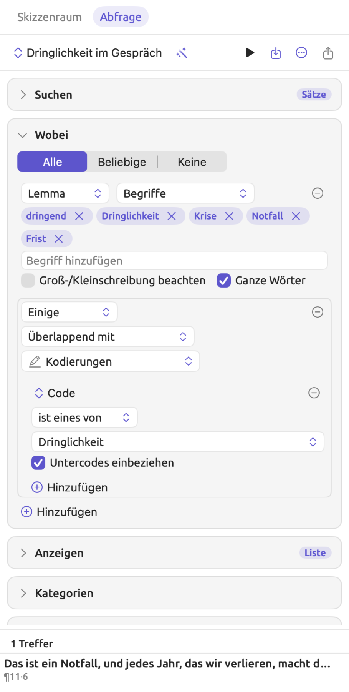
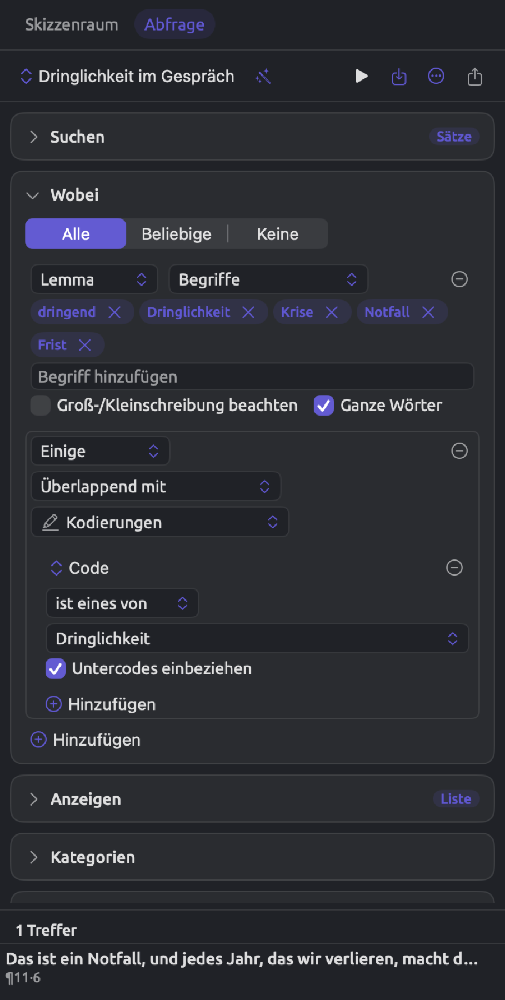
So öffnen Sie die Facette Abfrage:
- Öffnen Sie das Dokument.
- Wählen Sie Darstellung ▸ Inspektor ▸ Multimodus (⌥⌘4). Der Inspektor erscheint, und der Tab Multimodus ist ausgewählt.
- Klicken Sie oben im Tab auf Abfrage.
Weil der Inspektor schmal ist, kann jeweils nur eine Bedingung geöffnet sein. Wenn Sie auf eine Bedingung klicken, um ihren Inhalt aufzuklappen, klappt die zuvor geöffnete Bedingung zu. Zu Beginn ist die Bedingung Wobei bereits geöffnet. Unter den Bedingungen erscheinen die Ergebnisse der Abfrage. Die Trennlinie zwischen Editor und Ergebnisbereich lässt sich verschieben. Ein Klick auf einen Treffer scrollt die Leseansicht zu seiner Textstelle.
Ändern sich der Text, die Indizierung oder die Kodierungen des Dokuments, in dem eine Abfrage liegt, läuft diese Abfrage automatisch neu.
In einem Set oder im Projekt
So öffnen Sie die Ansicht Abfragen eines Sets:
- Klicken Sie in der Seitenleiste unter Sets auf das Set. Das Set öffnet sich in einem eigenen Tab.
- Klicken Sie in der Reihe der Schaltflächen oben im Tab auf Abfragen. In einem schmalen Fenster ist diese Reihe ein Menü; wählen Sie dort Abfragen.
Um die Ansicht Abfragen für Ihr ganzes Projekt zu öffnen, klicken Sie in der Seitenleiste unter Projekt auf Abfragen. Wie ein Set öffnet sich auch ein Tag in der Seitenleiste in einem Tab mit einer Ansicht Abfragen.
Diese Ansicht gibt dem Editor viel Platz. Ganz oben liegt eine einzige Kopfzeile mit dem Menü Ihrer gesicherten Abfragen, einem Suchfeld für Abfragen und den Schaltflächen Abfrage ausführen und Sichern (siehe Der Abfrageeditor weiter unten). Unter der Kopfzeile listet links eine schmale Spalte Ihre gesicherten Abfragen und danach die Vorlagen, während der Editor den übrigen Platz einnimmt. Die Ergebnisse erstrecken sich direkt darunter über die volle Breite, und mit einer Trennlinie dazwischen legen Sie fest, wie viel Platz jeder Teil erhält. Die Bedingungen Suchen, Wobei und Anzeigen sind beim Laden aufgeklappt; ist die Bedingung Muster zu sehen, ist auch sie zu Beginn aufgeklappt. Jede dieser Bedingungen klappt unabhängig von den anderen auf und zu. Ein Doppelklick auf einen Treffer in den Ergebnissen öffnet das Dokument in einem Vorschau-Tab und scrollt direkt zur Textstelle des Treffers.
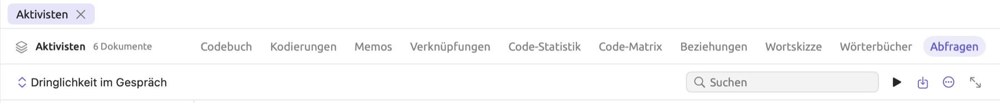
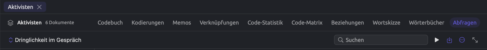
Wenn Sie mehr Platz für die Abfrage brauchen oder sie neben der Leseansicht geöffnet lassen möchten, klicken Sie auf In einem Fenster öffnen, die Schaltfläche mit zwei diagonalen Pfeilen am rechten Ende der Kopfzeile. Sie können auch mit der rechten Maustaste auf den Tab selbst klicken und In neuem Fenster öffnen wählen. Das Abfragen-Fenster erscheint mit einer Kopie der aktuellen Abfrage, einschließlich aller Änderungen, die Sie noch nicht gesichert haben. Das Set oder Projekt behält seine eigene Kopie.
Das Abfragen-Fenster
Das Abfragen-Fenster ist der Ort für Abfragen über alle Ihre Projekte. Es dient auch dazu, Abfragen eines Projekts oder Sets neben der Leseansicht geöffnet zu halten. Öffnen Sie das Abfragen-Fenster mit Fenster ▸ Abfragen; ist es schon geöffnet, wird es auf diesem Weg zum aktiven Fenster. Abfragen-Fenster sind genauso aufgebaut wie die Ansichten Abfragen, mit einem Menü für den Geltungsbereich am linken Rand der Kopfzeile. Dieses Menü bietet Alle Projekte, Ihre Projekte mit ihren Namen und die Sets Ihres aktiven Projekts an, angezeigt als „Klimadebatte › Aktivisten“. Beim ersten Öffnen des Fensters ist Alle Projekte als Geltungsbereich gewählt, und der Editor enthält eine leere Abfrage. Wenn Sie einen anderen Geltungsbereich wählen, bleibt die aktuelle Abfrage im Editor; sie liest von da an jedoch die Dokumente des gewählten Geltungsbereichs.
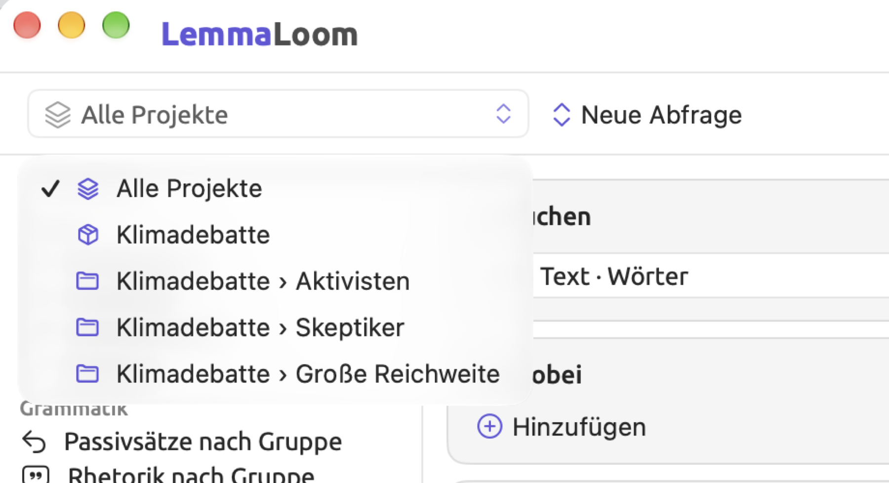
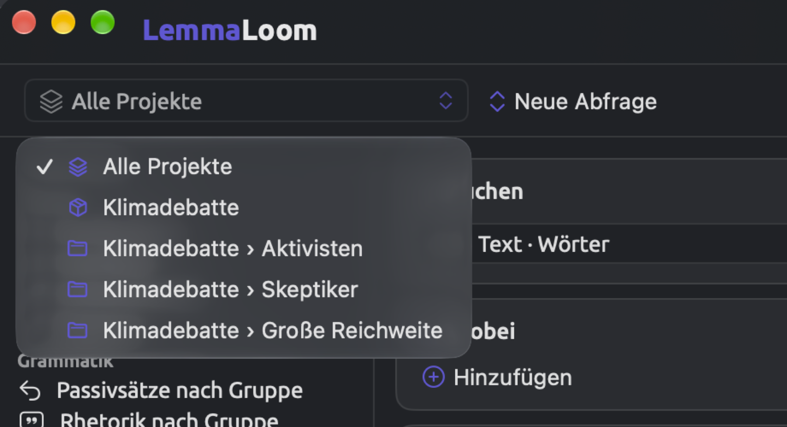
Nur wenn Alle Projekte als Geltungsbereich gewählt ist, können Sie das Feld Projekt eines Dokuments verwenden und Ergebnisse nach Projekten gruppieren. Mehr zu den projektübergreifenden Funktionen finden Sie unter Projektübergreifend arbeiten in Kapitel 3, Projekte und Dokumente.
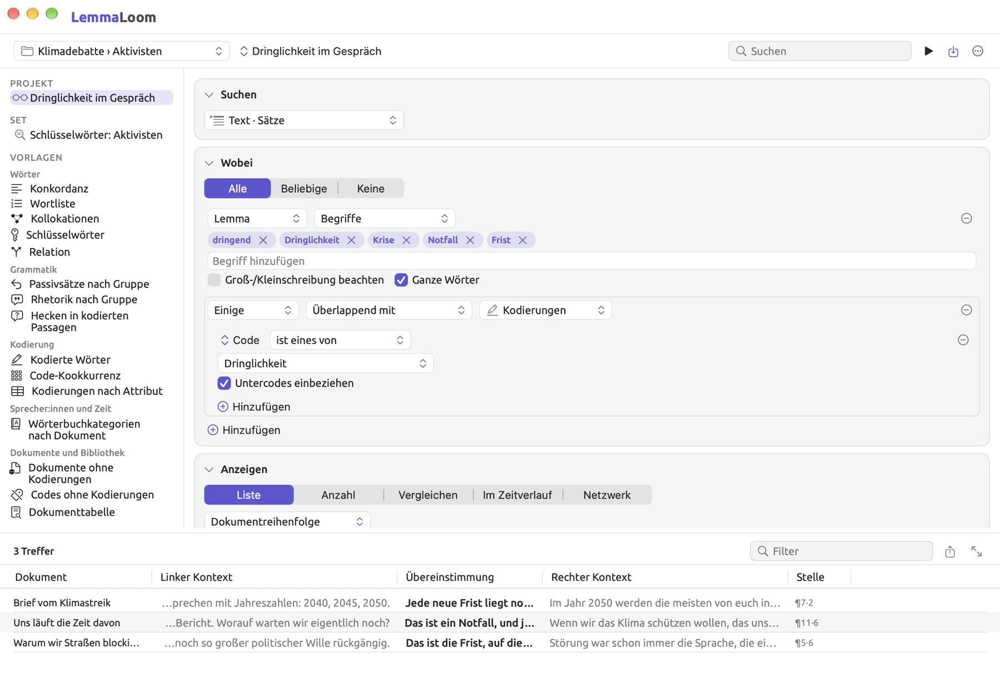
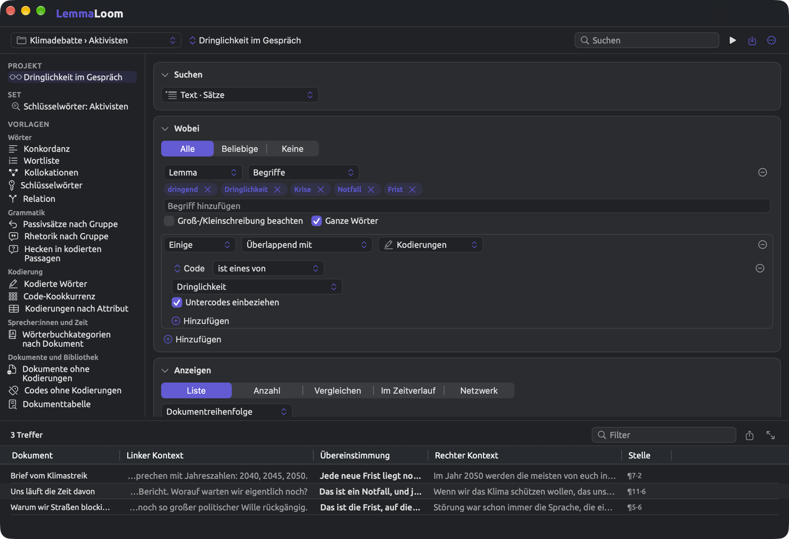
Um gleichzeitig mit zwei Abfragen zu arbeiten, etwa mit einer Abfrage und einer Variante davon, wählen Sie Neues Fenster im Menü Aktionen eines Abfragen-Fensters. Aktionen ist die Schaltfläche mit drei Punkten in einem Kreis in der Kopfzeile jedes Abfragen-Fensters. Das neue Fenster beginnt mit einer neuen Abfrage im selben Geltungsbereich. Eine Abfrage, die ein solches Fenster zeigt, geht beim Schließen des Fensters verloren, sofern Sie sie nicht vorher gesichert haben.
Geltungsbereiche
Der Geltungsbereich bestimmt auch, was der Editor anbietet. Regeln für die Attribute eines Dokuments etwa erscheinen, wenn eine Abfrage mehrere Dokumente liest.
| Dokument | Set | Projekt | Alle Projekte | |
|---|---|---|---|---|
| Gelesene Dokumente | Dieses Dokument | Die Originaldokumente des Sets | Die Originaldokumente des Projekts | Die Originaldokumente aller Projekte |
| Dokumentfelder in Regeln | Nein | Ja | Ja | Ja |
| Feld Set | Nein | Ja | Ja | Nein |
| Feld Projekt | Nein | Nein | Nein | Ja |
| Bibliothekseinheiten | Codes, Tags und Wörterbucheinträge | Alle außer Projekte | Alle außer Projekte | Alle |
| Vergleichen in der Bedingung Anzeigen | Nein | Ja | Ja | Ja |
| Schlüsselwörter in der Bedingung Anzeigen | Nein | Ja | Ja, im Vergleich mit einem seiner Sets | Nein |
| Option Korpus | Nein | Ja | Ja | Ja |
Bibliothekseinheiten finden Objekte wie Codes oder Dokumente, aber nie Textstellen (siehe Was gesucht wird).
Eine Abfrage in einem Dokument liest dieses Dokument, unabhängig davon, ob es ein Original oder eine Übersetzung ist. In Sets und Projekten liest eine Abfrage nur die Originale; um Übersetzungen abzufragen, ändern Sie in der Bedingung Optionen das Menü, das Originale zeigt (siehe Optionen). Intelligente Sets wie „Große Reichweite“ dienen ebenfalls als Geltungsbereich, und ihre Mitglieder werden bei jedem Lauf der Abfrage neu ermittelt.
Eine erste Abfrage
In diesem Beispiel bauen Sie „Dringlichkeit im Gespräch“ nach, eine Abfrage aus dem Beispielprojekt. Sie sucht in jedem Dokument des Sets mit den Texten der Aktivisten nach Sätzen, die dringend, Dringlichkeit, Krise, Notfall oder Frist enthalten und eine mit „Dringlichkeit“ kodierte Textstelle überlappen. Ihre eigene Fassung sichern Sie danach separat, damit Sie die beiden später vergleichen können.
- Klicken Sie in der Seitenleiste unter Sets auf „Aktivisten“ und dann oben im Tab des Sets auf Abfragen.
- Wählen Sie in der Bedingung Suchen den Eintrag Text · Sätze.
- Klicken Sie in der Bedingung Wobei auf Hinzufügen und wählen Sie Text hinzufügen. Eine Textzeile erscheint, eingestellt auf Wort und Begriffe.
- Ändern Sie Wort in Lemma, damit auch Pluralformen wie Fristen zählen.
- Klicken Sie in Begriff hinzufügen, geben Sie
dringend, Dringlichkeit, Krise, Notfall, Fristein und drücken Sie den Zeilenschalter. Jeder Begriff wird einzeln aufgeführt. - Klicken Sie erneut auf Hinzufügen und wählen Sie Kontext hinzufügen. Lassen Sie die Zeile auf Einige, Überlappend mit und Kodierungen stehen.
- Klicken Sie auf die Schaltfläche Hinzufügen in der Kontextzeile und wählen Sie Regel hinzufügen.
- Klicken Sie auf das Feld der Regel und wählen Sie im Abschnitt Kodierung des Menüs den Eintrag Code. Als Vergleich erscheint ist eines von.
- Klicken Sie auf den Wert, der Keine zeigt, und setzen Sie ein Häkchen bei „Dringlichkeit“. Untercodes einbeziehen hat bereits ein Häkchen, deshalb zählen auch Kodierungen mit „Fristen“ und „Kipppunkte“.
Bei einem kleinen Set wie „Aktivisten“ füllt sich die Ergebnisliste schon während der Arbeit mit Sätzen, denn in einem so kleinen Set läuft die Abfrage nach jeder Änderung von selbst (siehe Eine Abfrage ausführen weiter unten). Wenn Sie auf Abfragetext klicken, sehen Sie den Text der Abfrage:
Suchen Sätze
Wobei Lemma enthält "dringend", "Dringlichkeit", "Krise", "Notfall", "Frist" und Einige Überlappend mit Kodierungen (Code ist eines von "Dringlichkeit")
Anzeigen Liste
So behalten Sie Ihre Abfrage:
- Öffnen Sie das Menü Sichern (das Quadrat mit dem Pfeil, der hineinzeigt) und wählen Sie Als Lens sichern ….
- Geben Sie unter Name
Dringlichkeit im Gespräch 2ein. LemmaLoom akzeptiert auch einen Namen, der schon vergeben ist, doch zwei Abfragen, die beide „Dringlichkeit im Gespräch“ heißen, wären schwer auseinanderzuhalten. - Wählen Sie unter Verfügbar in den Eintrag Projekt und klicken Sie auf Sichern.
Ihre Abfrage steht jetzt neben „Dringlichkeit im Gespräch“ in jeder Ansicht Abfragen Ihres Projekts und in der Facette Abfrage jedes Ihrer Dokumente zur Verfügung. Sie können sie auch im Lens-Menü der Leseansicht als Lens wählen (siehe Kapitel 18, Abfrageergebnisse nutzen). Um sie mit dem Original zu vergleichen, wählen Sie „Dringlichkeit im Gespräch“ im Menü mit dem Namen der Abfrage links in der Kopfzeile oder klicken in der linken Spalte darauf.
Wählen Sie zuerst in der Bedingung Suchen die gewünschte Einheit, fügen Sie dann in der Bedingung Wobei Schritt für Schritt Regeln hinzu und achten Sie darauf, was jede neue Regel bewirkt. Wenn eine Regel unerwartet Treffer entfernt, passen Sie die Abfrage entsprechend an.
Der Abfrageeditor
Die Kopfzeile enthält von links nach rechts:
- den Namen der Abfrage, der als Menü der hier verfügbaren gesicherten Abfragen dient, mit Neue Abfrage am Ende. Ein Punkt neben dem Namen (etwa „Dringlichkeit im Gespräch“ •) zeigt, dass Sie an dieser Abfrage Änderungen vorgenommen haben, die noch nicht gesichert sind;
- ein Suchfeld, das die gesicherten Abfragen und Vorlagen in der linken Spalte auf jene beschränkt, deren Name Ihre Eingabe enthält;
- Abfrage ausführen (ein Dreieck), das zu Stoppen wird, solange die Abfrage läuft;
- Sichern (ein Quadrat mit einem Pfeil, der hineinzeigt);
- Aktionen (drei Punkte in einem Kreis) mit Befehlen für die Ergebnisse, etwa Set aus Treffern erstellen;
- In einem Fenster öffnen (zwei diagonale Pfeile) in der Ansicht Abfragen eines Sets oder des Projekts.
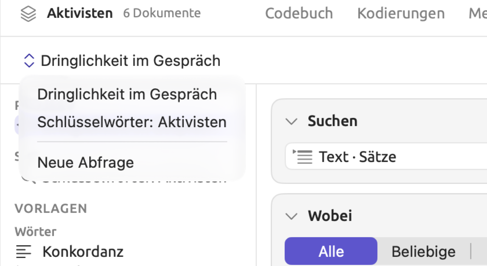
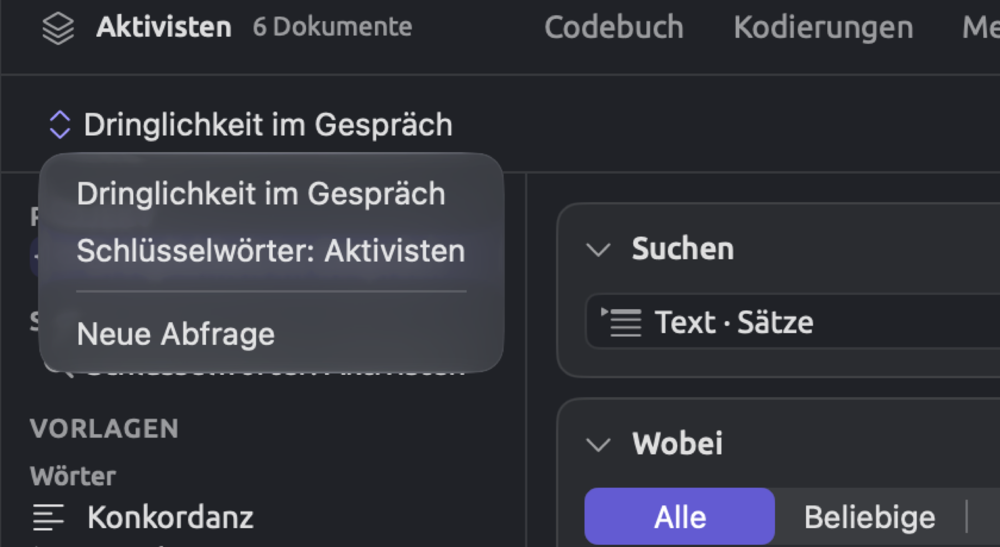
In Abfragen-Fenstern steht zusätzlich links in der Kopfzeile das Menü für den Geltungsbereich. Ist das Fenster schmal genug, rücken die Symbole Abfrage ausführen, Sichern und Aktionen in eine zweite Zeile unter der Kopfzeile. Exportieren (ein Quadrat mit einem Pfeil nach oben) steht schließlich in der Leiste über den Ergebnissen, sobald es Ergebnisse gibt (siehe Ergebnisse exportieren in Kapitel 16, Abfrageergebnisse und Statistik).
In der Facette Abfrage des Inspektors enthält die Kopfzeile den Namen der Abfrage, das Symbol Vorlagen (einen Zauberstab), Abfrage ausführen, Sichern, Aktionen und Exportieren. Je nach Breite des Inspektors kann die Kopfzeile auf zwei Zeilen umbrechen.
Nach der Kopfzeile folgen die Bedingungen:
| Bedingung | Inhalt |
|---|---|
| Suchen | Die Einheit und bei Texttreffer der gesuchte Text |
| Muster | Ein Abfolge-, Dependenz- oder Phrasenmuster, nur bei Mustertreffer sichtbar |
| Wobei | Regeln, Gruppen sowie Text-, Kontext- und „Hat“-Zeilen |
| Anzeigen | Die Darstellung der Ergebnisse, etwa eine Liste, Zählungen oder ein Vergleich |
| Kategorien | Bezeichnungen und Farben für Treffer |
| Optionen | Übersetzungen, kodierte Memos und die Zahl der Treffer, die eine Liste behält |
| Abfragetext | Die ganze Abfrage als ausgeschriebener Text |
Eine geschlossene Bedingung zeigt rechts eine Zusammenfassung, etwa die Einheit, die Art des Ergebnisses oder die Zahl der Regeln oder Kategorien (zum Beispiel 3 Regeln).
Wenn Sie eine Abfrage mit dem Befehl Bearbeiten ▸ Abfrage aus Auswahl beginnen, erscheint über den Bedingungen eine Reihe von Optionen, die auf den ausgewählten Wörtern beruhen. Mehr dazu finden Sie unter Abfrage aus Auswahl in Kapitel 17, Abfragemuster und Erkundung.
Was gesucht wird
Jede Zeile der Ergebnisse steht für die Analyseeinheit, also für das, was Sie lesen oder zählen möchten. Wenn Sie etwas zu Ihrem Thema finden möchten, eignen sich Sätze am besten; für Fragen zu Ihren eigenen Kodierungen verwenden Sie Kodierungen.
Im Menü unter Suchen sind die Einheiten nach Art geordnet, und jeder Eintrag nennt Art und Einheit, etwa Text · Sätze oder Annotationen · Kodierungen. Eine neue Abfrage sucht zunächst Text · Wörter und zeigt eine Liste.
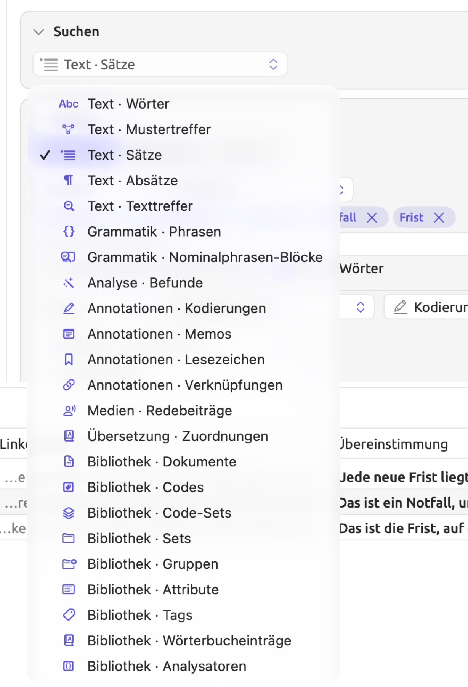
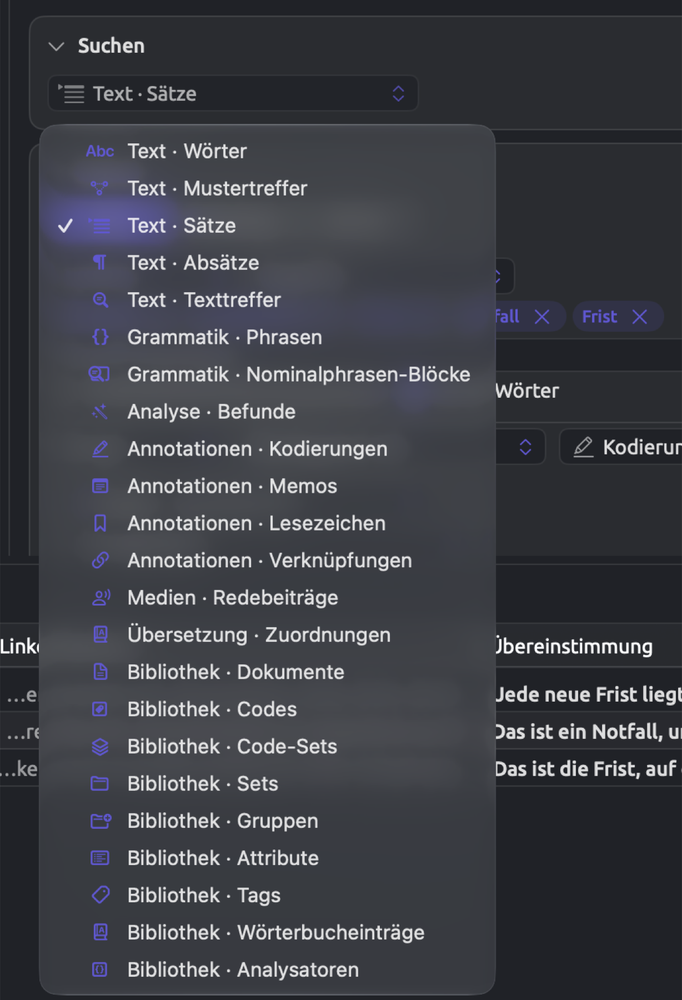
| Art | Einheit | Ein Treffer ist |
|---|---|---|
| Text | Wörter | Ein Wort oder ein Satzzeichen |
| Text | Mustertreffer | Ein Textabschnitt, der auf die Bedingung Muster passt |
| Text | Sätze | Ein Satz |
| Text | Absätze | Ein Absatz |
| Text | Texttreffer | Ein Vorkommen des Textes, der in der Bedingung Suchen angegeben ist |
| Grammatik | Phrasen | Eine Phrase aus der Phrasenstruktur des Satzes, etwa eine Nominalphrase oder eine Präpositionalphrase |
| Grammatik | Nominalphrasen-Blöcke | Ein Substantiv mit den Wörtern, die zu ihm gehören, etwa die Klimakrise |
| Analyse | Befunde | Eine Textstelle, die der Analysator Kohäsion, Metadiskurs oder Rhetorik oder einer Ihrer eigenen Analysatoren annotiert hat |
| Annotationen | Kodierungen | Eine kodierte Textstelle |
| Annotationen | Memos | Ein Memo. Ein Memo zum ganzen Dokument umfasst den ganzen Text |
| Annotationen | Lesezeichen | Ein Lesezeichen |
| Annotationen | Verknüpfungen | Ein Ende einer Verknüpfung |
| Medien | Redebeiträge | Ein Redebeitrag in einem Transkript |
| Übersetzung | Zuordnungen | Ein Abschnitt eines Dokuments zusammen mit seinem Gegenstück in einer Übersetzung |
| Bibliothek | Dokumente, Codes, Code-Sets, Sets, Gruppen, Attribute, Tags, Wörterbucheinträge, Analysatoren, Projekte | Ein Objekt dieser Art |
Wörter, Mustertreffer, Sätze, Phrasen, Nominalphrasen-Blöcke und Befunde setzen voraus, dass das Dokument indiziert ist. Ein nicht indiziertes Dokument wird dabei übergangen, und die Zahl neben der Trefferzahl, etwa 5 von 6, zeigt, wie viele Dokumente gelesen wurden. Die übrigen Einheiten kommen ohne Indizierung aus. Was die Indizierung in jeder Sprache liefert, beschreibt Kapitel 21, Analyse und Indizierung.
Bibliothekseinheiten finden Objekte statt Textstellen. Ihre Ergebnistabellen haben deshalb eine Zeile pro gefundenem Objekt und nicht pro gefundener Textstelle. Ergebnisse für Dokumente zeigen Titel, Autoren, Datum, Sprache, Gruppenzugehörigkeit, Tags und die Zahl der Token. Spalten für Codes wie Kodierungen und Kodierte Dokumente beschränken ihre Zählung auf den Geltungsbereich der Abfrage und auf die Codes selbst. Im Set „Aktivisten“ zählen diese Spalten also nur die Kodierungen in den Texten der Aktivisten.
Wenn Sie die Einheit wechseln, werden alle Regeln entfernt, die nicht zur neuen Einheit passen, ebenso unpassende Schlüssel unter Gruppieren nach. Die Sortierung springt auf Dokumentreihenfolge zurück, und die Bedingung Anzeigen springt auf Liste zurück, wenn sie auf etwas stand, das nach dem Wechsel nicht mehr verfügbar ist. Kontext- und Textzeilen sowie „Hat“-Zeilen bleiben stehen; prüfen Sie, ob sie zur aktuellen Einheit passen. Eine „Hat“-Zeile funktioniert nur bei den Einheiten, die unter „Hat“ aufgeführt sind. Ebenso funktioniert eine Kontextzeile nur bei Textstelleneinheiten und der Einheit Dokumente. Eine Zeile, die von der alten Einheit übrig bleibt, leert die Ergebnisse; entfernen Sie sie deshalb.
Die Bedingung Muster
Mit der Einheit Mustertreffer erscheint unter der Bedingung Suchen die Bedingung Muster. Muster beschreiben Textabschnitte über ihre Grammatik. Das macht sie nützlich für Abfragen nach Konstruktionen, etwa nach Verben mit ihrem Objekt, gleich mit welchen Wörtern diese gefüllt sind. Die Bedingung Muster kennt drei Modi, nämlich Abfolge (eine Folge von Wörtern, wahlweise mit Lücken dazwischen), Dependenz (Wörter, die durch grammatische Dependenzrelationen verbunden sind) und Phrase (eine Phrase eines bestimmten Typs). Mehr zu Mustern finden Sie in Kapitel 17, Abfragemuster und Erkundung.
Regeln in der Bedingung Wobei
Die Zeilen der Bedingung Wobei legen fest, was ein Treffer ist. Eine leere Bedingung Wobei behandelt alles im Geltungsbereich als Treffer; eine leere Abfrage mit der Einheit Sätze liefert also jeden Satz als Treffer.
Unten in der Bedingung bietet das Menü Hinzufügen fünf Arten von Zeilen an:
- Regel hinzufügen fügt eine Regel für ein Feld hinzu.
- Gruppe hinzufügen fügt eine Untergruppe von Zeilen hinzu (siehe Gruppen weiter unten).
- Text hinzufügen fügt ein Suchkriterium für den Textinhalt hinzu (siehe Text suchen).
- Kontext hinzufügen fügt ein Kriterium hinzu, das sich auf den Kontext bezieht, genauer auf andere Einheiten rund um den Treffer (siehe Kontext); es steht nur für Einheiten zur Verfügung, die Textstellen sind.
- „Hat“ hinzufügen fügt ein Kriterium für Objekte hinzu, die zum Treffer gehören (siehe „Hat“); es steht nur für Dokumente, Codes, Code-Sets, Sets, Gruppen, Tags und Projekte zur Verfügung.
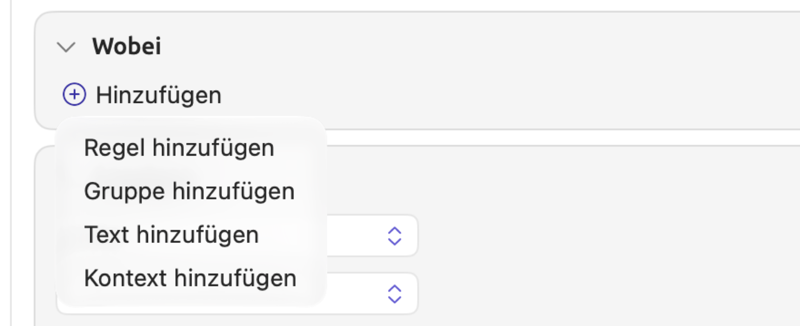
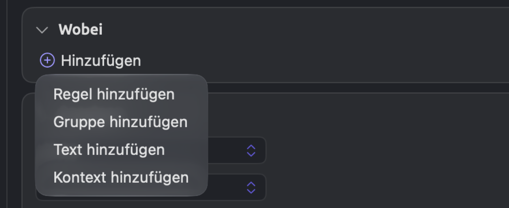
Ein Klick auf die Minus-Schaltfläche neben einer Zeile entfernt sie aus der Bedingung.
Eine Regel hinzufügen
Im Projekt „Klimadebatte“ hat jedes Dokument die Attribute „Haltung“ und „Reichweite“. Mit Regeln für beide Attribute in einer Abfrage nach Bibliothek · Dokumente im Projekt finden Sie nur die viel gelesenen Dokumente der Aktivisten. Die Abfrage findet zwei Dokumente, „Uns läuft die Zeit davon“ und „Brief vom Klimastreik“. Ihr Abfragetext sieht so aus:
Suchen Dokumente
Wobei "Haltung" ist eines von "Aktivismus" und "Reichweite" ist mindestens 100000
Anzeigen Liste
So fügen Sie eine Regel hinzu:
- Klicken Sie unter Wobei auf Hinzufügen und wählen Sie Regel hinzufügen. Eine Regel mit bereits gewähltem Feld erscheint, rot umrandet, weil sie noch keinen Wert hat.
- Klicken Sie auf das Feld und wählen Sie die Eigenschaft, die geprüft werden soll, etwa Attribut ▸ Haltung.
- Wählen Sie einen Vergleich, etwa ist eines von oder ist mindestens.
- Geben Sie den Wert unter Wert ein, oder klicken Sie auf den Wert und setzen Sie ein Häkchen bei den Werten, die zählen sollen.
Sobald die Bedingung mehr als eine Zeile hat, erscheint oben ein Schalter mit Alle, Beliebige und Keine. Bei Alle, wie in der Beispielabfrage oben, muss das Dokument beide Regeln erfüllen. Regeln ohne Wert (etwa Reichweite ist mindestens mit leerem Feld Wert) werden erst berücksichtigt, wenn Sie einen Wert eintragen.
Felder
Das Feldmenü bietet in Abschnitten die Felder an, die für Ihre Einheit infrage kommen. Zuerst kommen die Felder der aktuellen Einheit, danach die Felder der übergeordneten Einheiten, die sie enthalten. Bei der Einheit Wörter sind das die fünf Abschnitte Wort, Satz, Absatz, Passage und Dokument. Verwenden Sie ein Feld außerhalb des Abschnitts der aktuellen Einheit, steht der Name seines Abschnitts davor, etwa Satz · Passiv bei der Suche nach Wörtern.
Drei Einträge öffnen ein weiteres Menü. Attribut listet die Dokumentattribute des aktuellen Projekts. Beispiele sind „Haltung“ und „Erscheinungsdatum“. Kennzahl listet die statistischen Eigenschaften von Dokumenten, die Kapitel 10, Der Text-Inspektor beschreibt, darunter Durchschn. Satzlänge und Lexikalische Dichte. Code-Attribut unter Kodierung listet die Attribute von Codes, deren Werte Sie für jede Kodierung festlegen können.
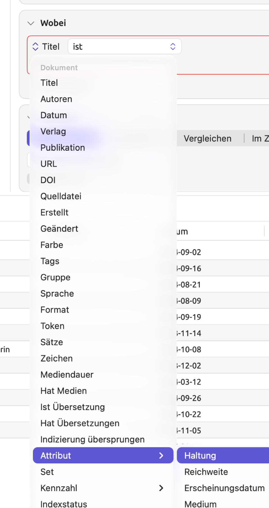
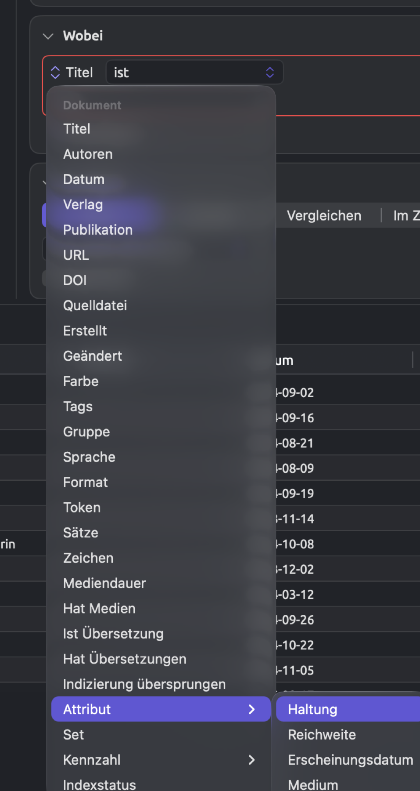
| Abschnitt | Felder | Angeboten bei Suche nach |
|---|---|---|
| Wort | Wort, Lemma, Wortklasse, Tag, Dependenz, Morphologie, Stoppwort, Ist Wort, Ist Satzzeichen, Position im Satz, Buchstaben, Kopf-Lemma, Wortklasse des Kopfes, Funktion, Wortart, Phrasenkategorie, Negator, Im Negationsbereich, Konnektiv, Modalität, Topologisches Feld, Partikel | Wörter |
| Satz | Satztext, Wörter im Satz, Satznummer, Wurzel-Lemma, Wortklasse der Wurzel, Passiv | Wörter, Mustertreffer, Sätze, Phrasen, Nominalphrasen-Blöcke, Befunde |
| Absatz | Absatztext, Absatznummer | Jede Textstelleneinheit außer Memos, Verknüpfungen und Zuordnungen |
| Passage | Text, Länge (in Zeichen) | Jede Textstelleneinheit |
| Phrase | Phrasenlabel, Form, Breite, Phrasenfunktion, Phrasenkopf | Phrasen, Nominalphrasen-Blöcke |
| Befund | Analysator, Befund, Notiz | Befunde |
| Kodierung | Code, Code-Attribut, Länge, Erstellt, Ausschnitt, Kodiertes Memo | Kodierungen |
| Memo | Inhalt, Angehängt an, Verknüpfter Code, Tags, Erstellt, Geändert | Memos |
| Lesezeichen | Farbe, Kommentar, Erstellt, Geändert | Lesezeichen |
| Verknüpfung | Relation, Kommentar, Farbe, Tags, Erstellt, Anderes Dokument, Endpunkt | Verknüpfungen |
| Redebeitrag | Sprecher:in, Anfang, Ende, Dauer | Redebeiträge |
| Zuordnung | Übersetzungssprache, Ausgangstext, Übersetzungstext | Zuordnungen |
| Dokument | Titel, Autoren, Datum, Verlag, Publikation, URL, DOI, Quelldatei, Erstellt, Geändert, Farbe, Tags, Gruppe, Sprache, Format, Token, Sätze, Zeichen, Mediendauer, Hat Medien, Ist Übersetzung, Hat Übersetzungen, Indizierung übersprungen, Attribut, Set, Kennzahl, Indexstatus, Projekt | Dokumente und jede Textstelleneinheit, in Sets, Projekten und Alle Projekte |
| Code | Name, Pfad, Tiefe, Übergeordnet, Farbe, Stil, Geltungsbereich, Kodierbar, Beschreibung, Tags, Code-Set, Kodierungen, Kodierte Dokumente | Codes |
| Code-Set | Name, Codes | Code-Sets |
| Set | Name, Art, Dokumente, Farbe | Sets |
| Gruppe | Name, Dokumente | Gruppen |
| Attribut | Name, Typ, Eigentümer, Beschreibung, Auswahlmöglichkeiten, Gesetzte Werte | Attribute |
| Tag | Name, Verwendungen, Projekte, Dokumente, Codes | Tags |
| Wörterbucheintrag | Begriff, Kategorie, Wörterbuch, Treffer | Wörterbucheinträge |
| Analysator | Name, Sprachen, Legendenschlüssel | Analysatoren |
| Projekt | Name, Farbe, Tags, Dokumente | Projekte |
Die Wortfelder stammen aus der Indizierung. Wortart fasst die feineren Klassen von Wortklasse zu größeren Kategorien zusammen, sodass Eigennamen zu den Substantiven und Hilfsverben zu den Verben zählen. Mehr zu Wortarten und Wortklassen finden Sie in Kapitel 11, Der Grammatik-Inspektor. Die Annotationen der Lenses für Modalität, Konnektiv, Topologisches Feld (Deutsch) und Partikel (Chinesisch) erklärt Kapitel 6, Lenses.
Vergleiche und Werte
Welche Vergleiche eine Regel erlaubt, hängt von der Art der Werte im Feld ab.
| Art des Feldes | Beispiele | Vergleiche |
|---|---|---|
| Text | Titel, Lemma, Kommentar, Medium | ist, ist nicht, enthält, enthält nicht, passt auf, ist leer, ist nicht leer |
| Zahl | Token, Länge, Reichweite | ist, ist nicht, ist kleiner als, ist höchstens, ist größer als, ist mindestens, liegt zwischen, ist leer, ist nicht leer |
| Dauer | Mediendauer, Anfang, Dauer | Dieselben wie bei Zahlen |
| Datum | Datum, Erstellt, Erscheinungsdatum | ist, ist vor, ist nach, ist am oder nach, ist am oder vor, liegt zwischen, ist leer, ist nicht leer |
| Ja oder nein | Passiv, Stoppwort, Hat Medien | ist wahr, ist falsch, ist leer |
| Ein Wert aus einer Liste | Code, Wortklasse, Gruppe, Sprecher:in, Farbe, Haltung | ist eines von, ist keines von, ist leer, ist nicht leer |
| Mehrere Werte | Tags | hat eines von, hat alle von, hat keines von, ist leer, ist nicht leer |
| Sprache und Format | Sprache, Format | ist eines von, ist keines von |
Wie Sie einen Wert eingeben, hängt von seiner Art ab:
- Text und Zahlen tragen Sie direkt in das Feld Wert ein. Bei liegt zwischen erscheinen zwei Felder.
- Ein Datum wählen Sie mit einer Datumsauswahl. Sie zeigt zunächst das heutige Datum, doch die Regel wirkt erst, wenn Sie es ändern.
- Eine Dauer geben Sie in Minuten und Sekunden (
12:30) oder in Stunden, Minuten und Sekunden (1:05:00) ein. Eine einzelne Zahl steht für Sekunden. - Werte aus einer Liste erscheinen als Markierungsfelder in einem kleinen Bereich, der sich öffnet, wenn Sie auf den Wert klicken. Sobald Sie etwas markiert haben, zeigt der Wert etwa „Aktivismus“ oder „Skepsis“; Keine bedeutet, dass nichts ausgewählt ist.
Beim Vergleich von Textwerten ignoriert LemmaLoom die Groß- und Kleinschreibung. Auch Akzente und Umlaute sowie der Unterschied zwischen Zeichen in voller und halber Breite (Ａ und A) spielen keine Rolle. Mit Titel enthält klima erhalten Sie deshalb Ergebnisse wie „Brief vom Klimastreik“. Der Vergleich passt auf prüft den ganzen Wert und erlaubt Platzhalter (* steht für eine beliebige Folge von Zeichen, ? für genau ein Zeichen). Titel passt auf W?r* liefert „Wer bezahlt die Wende“ und „Warum wir Straßen blockieren“. Titel passt auf *davon liefert dagegen „Uns läuft die Zeit davon“, passt aber nicht auf „Uns läuft die Zeit davon (Englisch)“, weil das Muster auf den ganzen Titel passen muss.
Das Feld Code listet die Codes mit ihrem Pfad, etwa „Dringlichkeit › Fristen“. In Sets und Projekten trägt ein Code, der nur zu einem bestimmten Dokument gehört, zusätzlich den Titel dieses Dokuments. Direkt unter einer Regel für Code steht die Option Untercodes einbeziehen. Sie hat anfangs ein Häkchen, sodass „Emotionen“ auch seine Untercodes „Angst“ und „Hoffnung“ einschließt.
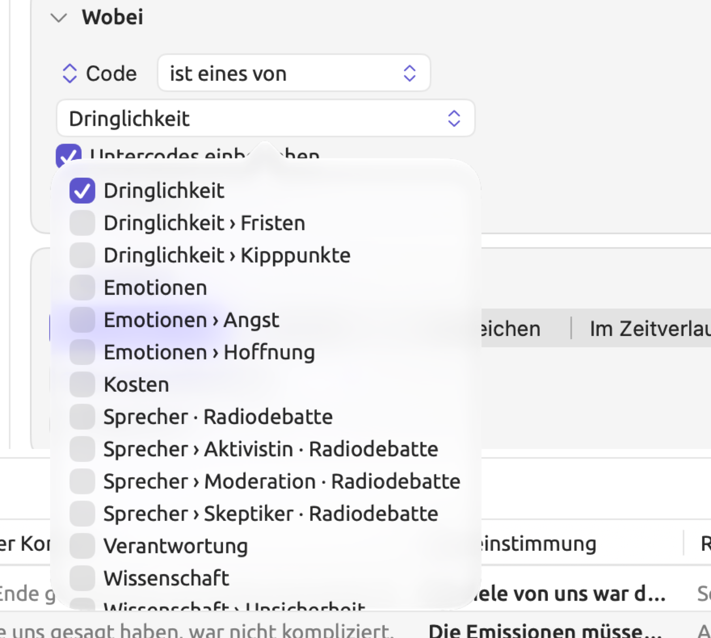
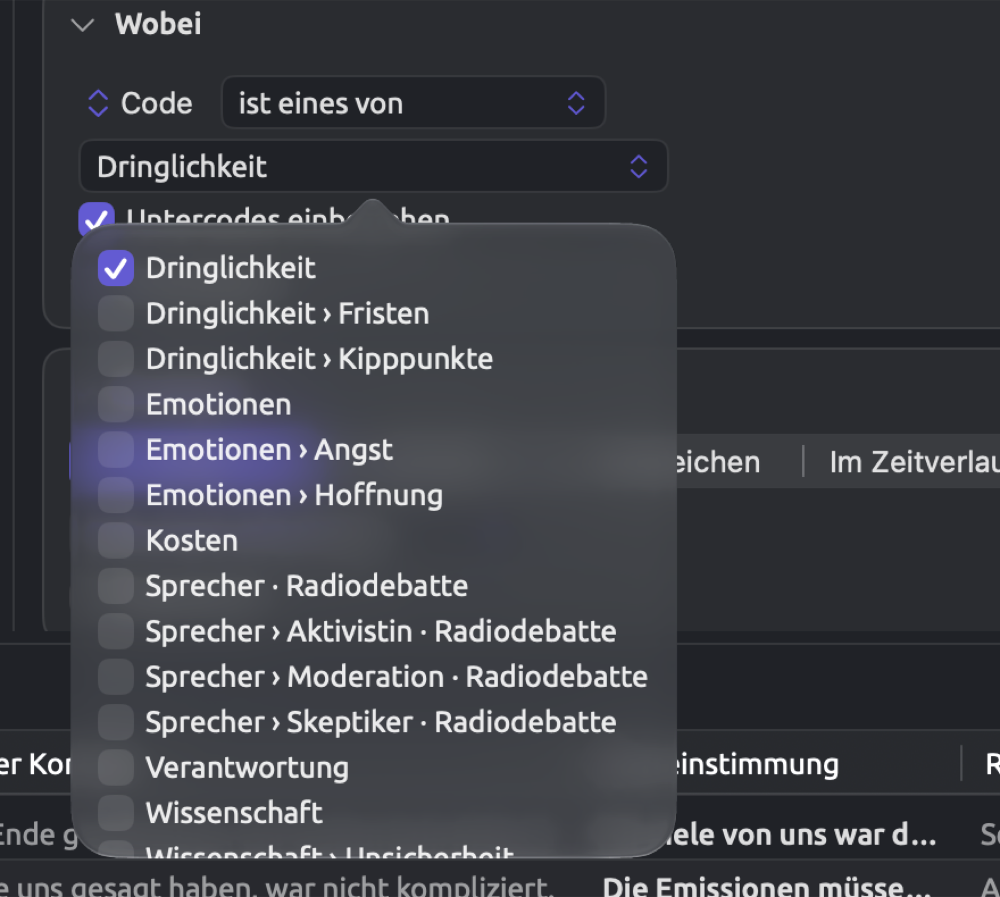
Tag (das grammatische Tag eines Wortes, nicht Ihre eigenen Tags) listet die Tagsets der Sprachen im Geltungsbereich. Ebenso listet Dependenz die Inventare der Dependenzrelationen und Phrasenlabel die Inventare der Phrasenlabels. Enthält der Geltungsbereich mehr als eine Sprache, tragen die Einträge dieser drei Felder ein Sprachkennzeichen, denn Englisch, Deutsch und Chinesisch verwenden unterschiedliche Tagsets.
Gruppen
Der Schalter oben in Bedingungen und Gruppen (Alle, Beliebige oder Keine) bestimmt, was mit den Treffern geschieht, die ihre Regeln erfüllen. Er legt also fest, ob die Bedingung oder Gruppe die Treffer behält, die alle ihre Regeln erfüllen (Alle), mindestens eine davon (Beliebige) oder keine davon (Keine).
Das Besondere an Gruppen im Vergleich zu gewöhnlichen Bedingungen ist, dass sie ein oder in ein und einfügen können. Angenommen, Sie möchten Kodierungen mit „Emotionen“ in den viel gelesenen Texten des Projekts „Klimadebatte“ finden und außerdem in den Texten der Skeptiker, gleich wie groß deren Reichweite ist. Dafür eignet sich eine Abfrage nach Annotationen · Kodierungen in „Klimadebatte“. Sie enthält die Regel Code ist eines von „Emotionen“, mit Häkchen bei Untercodes einbeziehen. Unter dieser Regel liegt eine Gruppe, die auf Beliebige steht. Die Gruppe enthält zwei Regeln, nämlich Reichweite ist mindestens 100.000 und Haltung ist eines von „Skepsis“. Die Bedingung bleibt auf Alle. Der Abfragetext zeigt die Gruppe in Klammern:
Suchen Kodierungen
Wobei Code ist eines von "Emotionen" und ("Reichweite" ist mindestens 100000 oder "Haltung" ist eines von "Skepsis")
Anzeigen Liste
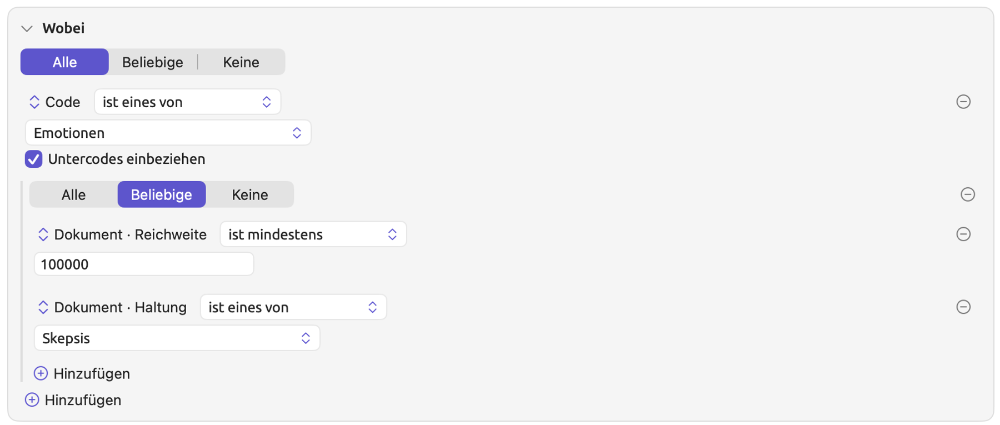
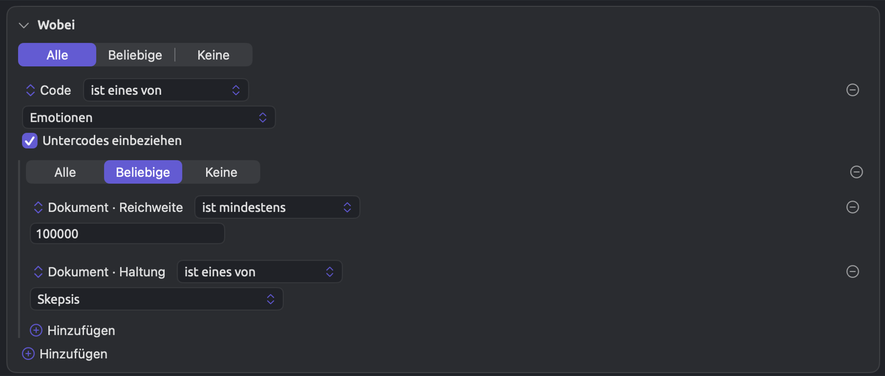
So fügen Sie eine Gruppe hinzu:
- Klicken Sie unter Wobei auf Hinzufügen und wählen Sie Gruppe hinzufügen. Die neue Gruppe beginnt mit Beliebige und einer Regel.
- Richten Sie diese Regel ein wie jede andere.
- Um der Gruppe weitere Regeln hinzuzufügen, klicken Sie auf die Schaltfläche Hinzufügen der Gruppe selbst und wählen Regel hinzufügen.
Eine Regel darf höchstens drei Ebenen tief verschachtelt sein, auch wenn das Menü Hinzufügen tiefere Verschachtelungen zulässt. Eine Untergruppe in einer Gruppe ist in Ordnung, eine weitere Gruppe in dieser Untergruppe ist dagegen zu tief verschachtelt. Kontext- und „Hat“-Zeilen zählen jeweils als zwei Ebenen. Direkt in der Bedingung Wobei können diese Zeilen nur Regeln enthalten. Innerhalb von Gruppen wären dagegen schon die Regeln in diesen Zeilen zu tief verschachtelt. Eine zu tief verschachtelte Regel wird rot umrandet (Zu tief verschachtelt), und die Abfrage wartet, bis Sie die Regel entfernen.
Eingefrorene Listen
Eine eingefrorene Liste ist eine Liste von Wörtern, die in der Abfrage selbst gespeichert ist. Eine eingefrorene Liste erstellen Sie mit dem Befehl Werte einfrieren im Menü Aktionen aus den Ergebnissen einer Abfrage mit Kollokationen oder Schlüsselwörter (siehe Kapitel 18, Abfrageergebnisse nutzen). Auch Passagen wie ein Code erstellt eine eingefrorene Liste (siehe Passagen wie ein Code in Kapitel 17, Abfragemuster und Erkundung).
Werte einfrieren ersetzt die bestehende Abfrage durch eine neue, ungesicherte Abfrage mit der Einheit Wörter. Sie hat nur eine Regel, die das Feld, nach dem die Abfrage gezählt hat (Lemma, Wort oder Wortklasse), mit den Wörtern der Liste vergleicht. Die neue Abfrage und die eingefrorene Liste übernehmen den Namen der Abfrage, die Sie eingefroren haben. Gespeichert werden bis zu 200 Wörter, jedes mit seinem Wert aus den Ergebnissen. Der Abfragetext nennt die eingefrorene Liste beim Namen, etwa Lemma ist eines von "Schlüsselwörter: Aktivisten".
Die Wörter in diesen Listen bleiben gleich, auch wenn sich Ihre Dokumente ändern. Um zu sehen, wo die Schlüsselwörter der Aktivisten in den Texten der Skeptiker vorkommen, sichern Sie die eingefrorene Abfrage für das Projekt und öffnen sie im Set „Skeptiker“.
In der Bedingung Wobei einer Abfrage mit eingefrorener Liste zeigen Regeln für Lemma und Wort den Wert Keine. Bei Regeln für Wortklasse wird die eingefrorene Liste mit den verfügbaren Wortklassen abgeglichen, und jede Klasse hat entsprechend ein Häkchen oder keines. Sobald Sie bei einer einzelnen Klasse ein Häkchen setzen oder entfernen, wird die eingefrorene Liste entfernt und Ihre Auswahl verwendet. Um die eingefrorene Liste aus einer Abfrage zu entfernen, entfernen Sie ihre Regel.

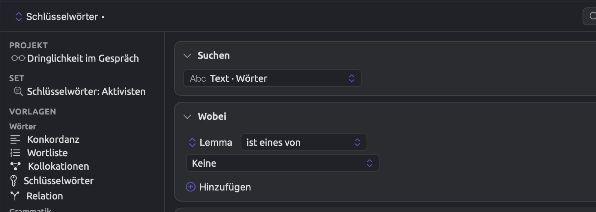
Abfragen mit eingefrorener Liste bieten für ihre Ergebnislisten die zusätzliche Sortierung Wert an. Diese Sortierung ordnet die Textstellen nach den eingefrorenen Wörtern, die darin vorkommen. Mehr zu diesem Wert finden Sie in Kapitel 17, Abfragemuster und Erkundung.
Text suchen
Nach Wörtern oder Zeichen können Sie auf zwei Wegen suchen. Mit Text hinzufügen in der Bedingung Wobei fügen Sie den Regeln der Abfrage eine Textzeile als Voraussetzung für den Treffer hinzu. Die gefundenen Sätze enthalten dann jeweils einen Ihrer Begriffe. Wählen Sie dagegen unter Suchen den Eintrag Text · Texttreffer, wird jedes Vorkommen zu einem eigenen Treffer. Dieselbe Textzeile erscheint dann in der Bedingung Suchen.
Eine Textzeile hat zwei Menüs. Im ersten legen Sie fest, womit Ihre Begriffe verglichen werden, im zweiten, das zunächst auf Begriffe steht, woher die Begriffe kommen. Unter den Menüs geben Sie Ihre Begriffe ein und verwenden dann die beiden Markierungsfelder Groß-/Kleinschreibung beachten und Ganze Wörter.
Womit verglichen wird
| Erstes Menü | Vergleicht jeden Begriff mit | Groß- und Kleinschreibung | Akzente und Umlaute |
|---|---|---|---|
| Wort | Jedem Wort in seiner Schreibung | Ignoriert, sofern Groß-/Kleinschreibung beachten kein Häkchen hat | Ignoriert, sofern Groß-/Kleinschreibung beachten kein Häkchen hat |
| Wortform | Der Grundform jedes Wortes | Ignoriert | Berücksichtigt |
| Lemma | Der Grundform jedes Wortes | Ignoriert | Ignoriert |
| Text | Den Zeichen des Textes, wo immer sie vorkommen | Ignoriert, sofern Groß-/Kleinschreibung beachten kein Häkchen hat | Ignoriert |
Für Wörter liefert Lemma in der Regel die besten Ergebnisse, weil die Suche alle Flexionsformen eines Wortes findet. Wort eignet sich besser, wenn es für Ihre Analyse auf die genaue Form ankommt, etwa um Notfall von Notfälle zu unterscheiden. Wortform arbeitet genau wie Lemma, unterscheidet aber Akzente und Umlaute; schon und schön sind deshalb unter Wortform verschiedene Wörter, unter Lemma dagegen dasselbe.
Alle drei Optionen (Wortform, Wort und Lemma) finden ganze Wörter, so wie die Indizierung sie bestimmt hat. Ein Begriff aus mehreren Wörtern muss genau auf aufeinanderfolgende Wörter in derselben Reihenfolge passen, ohne Unterbrechung und innerhalb eines Satzes. Bindestriche werden vor dem Vergleich entfernt, sodass die Suche nach Netto-Null Ergebnisse mit Netto-Null und mit Netto Null liefert. In einem Dokument ohne Indizierung verhalten sich alle drei wie Text.
Text findet die Zeichen selbst, so wie sie im Text stehen, statt ganzer Wörter aus der Indizierung wie Wortform, Wort und Lemma. Mit Ganze Wörter zählt ein Treffer nur, wenn direkt davor und danach weder ein Buchstabe noch eine Ziffer steht. Ohne Häkchen bei Ganze Wörter finden Sie Wörter auch innerhalb längerer Zeichenfolgen. Ganze Wörter wirkt nur auf Text.
Für Wortform und Lemma geben Sie jedes Wort eines Begriffs in seiner Grundform ein; für ich glaube geben Sie also ich glauben ein, weil die Grundform von glaube glauben lautet. Oder Sie verwenden stattdessen Wort.
Neue Textzeilen in der Bedingung Wobei stehen zunächst auf Wort, wenn die Einheit eine Indizierung voraussetzt, etwa Sätze, und bei anderen Einheiten wie Kodierungen auf Text. Auch Texttreffer beginnt mit Text.
Bei der Suche nach Codes oder Sets finden Textzeilen Treffer unabhängig von Groß- und Kleinschreibung und von Akzenten. Sie suchen jeden einfachen Begriff an beliebiger Stelle in den Namen, sodass punkt „Kipppunkte“ findet. Bei der Einheit Dokumente durchsucht eine Textzeile den Text der Dokumente. Unter den Bibliothekseinheiten funktionieren Textzeilen nur mit diesen dreien.
Begriffe
Im Modus Begriffe geben Sie die Begriffe selbst ein.
- Klicken Sie in Begriff hinzufügen.
- Geben Sie einen Begriff ein und drücken Sie den Zeilenschalter. Um mehrere auf einmal hinzuzufügen, trennen Sie sie durch Kommas, wie in
Krise, Notfall, Frist. - Um einen Begriff zu entfernen, klicken Sie auf das Kreuz daneben.
Die Begriffe sind dabei Alternativen; ein Treffer erfüllt mindestens einen von ihnen. Enthält eine Textzeile keine Begriffe, ignoriert LemmaLoom die Zeile.
Wörterbücher
Im Modus Wörterbuch stammen die Begriffe direkt aus einem der Wörterbücher Ihres Projekts. „Klimadebatte“ hat zum Beispiel ein Wörterbuch namens „Heckenausdrücke“ mit den beiden Kategorien „Approximatoren“ und „Abschwächer“. Die Abbildung unten zeigt eine Textzeile, die nach „Abschwächer“ sucht.
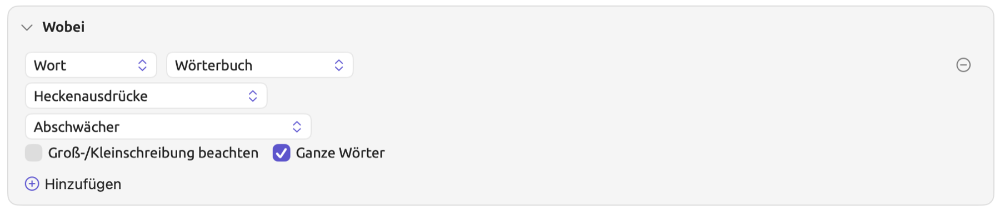
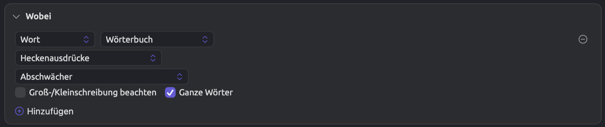
So suchen Sie mit einem Wörterbuch:
- Wählen Sie im zweiten Menü Wörterbuch.
- Wählen Sie das Wörterbuch im Menü, das dann erscheint.
- Um die Suche auf bestimmte Kategorien zu beschränken, klicken Sie auf das Steuerelement unter dem Wörterbuch und markieren die Kategorien in dem Bereich, der sich öffnet. Ist nichts markiert, zeigt das Steuerelement Keine, und alle Kategorien werden verwendet.
Die Abfrage liest das Wörterbuch bei jedem Lauf neu; ein Begriff, den Sie zu „Heckenausdrücke“ hinzufügen, wird also beim nächsten Lauf mitgesucht. Das erste Menü und beide Markierungsfelder gelten für alle Begriffe im Wörterbuch. „Heckenausdrücke“ enthält Wendungen so, wie sie gesprochen werden, etwa ich glaube oder mehr oder weniger. Für dieses Wörterbuch ist Wort deshalb die bessere Wahl als Lemma. Mehr dazu, wie die Wörterbuch-Lens Treffer findet, erfahren Sie in Kapitel 19, Wörterbücher.
Wenn eine Abfrage mit der Einheit Texttreffer ein Wörterbuch verwendet, trägt jeder Treffer zusätzlich die Wörterbuchkategorie des gefundenen Begriffs. Wählen Sie in einer Schlüsselzeile der Bedingung Anzeigen im Menü, das Feld zeigt, die Option Kategorie, werden die Treffer nach ihren Kategorien gezählt; so funktioniert die Vorlage Wörterbuchkategorien nach Dokument.
Reguläre Ausdrücke
Ein regulärer Ausdruck ist ein Muster aus Zeichen. Er ist praktisch, wenn die gesuchten Formen stärker variieren, als sich mit einer Liste von Begriffen erfassen lässt, etwa bei Schreibvarianten. Das Muster Modelle? findet zum Beispiel sowohl Modell als auch Modelle, weil ? das Zeichen davor optional macht; es findet Modell aber auch im Wort Modellierer. Ebenso liefert \bHitze[- ]?wellen?\b Ergebnisse für Hitze Welle, Hitze-Welle, Hitzewelle und Hitzewellen. Dabei passt [- ] auf einen Bindestrich oder ein Leerzeichen, und \b passt auf eine Wortgrenze. Weitere Bausteine finden Sie unter Text von der Indizierung ausschließen in Kapitel 4, Material importieren.
- Wählen Sie im zweiten Menü Regulärer Ausdruck.
- Geben Sie das Muster unter Muster ein.
Ein regulärer Ausdruck durchsucht alle Zeichen des Textes, unabhängig davon, was im ersten Menü steht. Sofern Groß-/Kleinschreibung beachten kein Häkchen hat, wird die Groß- und Kleinschreibung ignoriert; Akzente und Umlaute zählen dagegen immer. Wortgrenzen geben Sie an, indem Sie \b um Ihr Muster setzen. Ein Muster darf höchstens 1.000 Zeichen lang sein. Kann LemmaLoom das Muster nicht lesen, wird es rot umrandet, und die Abfrage wartet, bis Sie es korrigieren. Der Ergebnisbereich zeigt dann Ungültiges Muster, ebenso die Zeile, wenn Sie den Mauszeiger darauf halten.
Chinesischer Text
Weil Chinesisch Wörter nicht durch Leerzeichen trennt, müssen Anfang und Ende eines chinesischen Suchbegriffs unter Wort, Wortform oder Lemma auf Wortgrenzen fallen, die bei der Indizierung gefunden wurden.
Begriffe können aus mehreren Wörtern bestehen. Der Begriff 科学 (Wissenschaft) passt, wenn die Indizierung 科学 als ein Wort erkennt oder 科 und 学 als zwei getrennte Wörter. Ein längeres Wort wie 科学家 (Wissenschaftler) ist für LemmaLoom ein anderes Wort. Leerzeichen in Ihrem Begriff werden ignoriert.
Wenn Sie Text wählen, findet LemmaLoom einen chinesischen Begriff überall, wo seine Zeichen vorkommen, auch innerhalb anderer Wörter. Ganze Wörter gilt hier nicht. Wenn Sie nicht sicher sind, wie die Indizierung ein Wort zerlegt, verwenden Sie Text.
Kontext
Kontextzeilen entscheiden anhand der umgebenden Einheiten, ob ein Treffer bleibt oder verworfen wird. Mit Kontextzeilen verbinden Sie üblicherweise Ihre Codes mit Textstellen; sie finden zum Beispiel die Wörter in Textstellen, die Sie mit „Dringlichkeit“ kodiert haben, oder die Sätze, die noch nicht kodiert sind. Eine Kontextzeile liest sich von links nach rechts wie ein kurzer Satz. Bei Einige Überlappend mit Kodierungen behält LemmaLoom also jeden Treffer, der eine Kodierung überlappt. Unter der Zeile fügen Sie Regeln für die anderen Einheiten hinzu. Die erste Abfrage verwendet zum Beispiel eine Kontextzeile mit der Regel Code ist eines von „Dringlichkeit“.
Jede neue Kontextzeile beginnt mit Einige, Überlappend mit und Kodierungen.
Im ersten Menü legen Sie fest, wie viele andere Einheiten es geben muss:
- Einige bedeutet mindestens eine.
- Keine verlangt, dass es keine andere Einheit gibt.
- Mindestens verlangt mindestens die Zahl, die Sie mit den Schaltflächen − und + einstellen, von 1 bis 99.
- Höchstens erlaubt nicht mehr als diese Zahl, null eingeschlossen.
Das zweite Menü legt die Beziehung zwischen den Einheiten fest, das dritte die Art der anderen Einheiten; das kann jede Textstelleneinheit sein. Mustertreffer und Texttreffer erscheinen im dritten Menü nur, wenn Suchen dieselbe Einheit verwendet. Wenn Sie diese Einheit ändern, werden die Regeln unter der Zeile entfernt.
| Beziehung | Der Treffer zählt, wenn er |
|---|---|
| Überlappend mit | mindestens ein Zeichen mit der anderen Einheit teilt |
| Innerhalb | ganz innerhalb der anderen Einheit liegt |
| Enthält | die andere Einheit ganz enthält |
| Gleicher Bereich wie | genau dort beginnt und endet, wo die andere Einheit beginnt und endet |
| Im selben Satz wie | in dem Satz beginnt, in dem die andere Einheit beginnt |
| Im selben Absatz wie | in dem Absatz beginnt, in dem die andere Einheit beginnt |
| Im selben Redebeitrag wie | zusammen mit der anderen Einheit innerhalb eines Redebeitrags liegt |
| In der Nähe von | höchstens die eingestellte Zahl von Wörtern von der anderen Einheit entfernt ist, davor oder danach |
| Vor | endet, bevor die andere Einheit beginnt, mit höchstens der eingestellten Zahl von Wörtern dazwischen |
| Nach | beginnt, nachdem die andere Einheit endet, mit höchstens der eingestellten Zahl von Wörtern dazwischen |
| Verknüpft mit | ein Ende einer Verknüpfung überlappt; die Regeln unter der Zeile prüfen die Verknüpfung |
| Übersetzt als | einen Abschnitt überlappt, dem eine Übersetzung zugeordnet ist; die Regeln prüfen diese Zuordnung |
Die drei Beziehungen In der Nähe von, Vor und Nach haben Schaltflächen − und + für den Abstand, also die Zahl der Wörter, die zwischen den beiden Einheiten liegen dürfen. Voreingestellt sind 3, möglich sind 0 bis 50 Wörter. Beim Abstand zählen nur Wörter. Ein Abstand von 0 bedeutet, dass sich die beiden Einheiten berühren, ohne dass ein Wort dazwischen liegt. Einheiten, die sich überlappen, haben deshalb immer den Abstand 0. In der Nähe von reicht über Satzgrenzen hinweg.
Der Kontext besteht immer aus anderen Einheiten als dem Treffer selbst.
Für die Beziehungen Im selben Satz wie, In der Nähe von, Vor und Nach muss das Dokument indiziert sein. Für Im selben Redebeitrag wie muss es außerdem ein Transkript haben. Eine Abfrage mit einer dieser Beziehungen findet Treffer deshalb nur in solchen Dokumenten.
Eine Abfrage mit der Einheit Sätze und der Kontextzeile Keine Überlappend mit Kodierungen, unter der keine Regeln stehen, liefert die Sätze, die noch nicht kodiert sind.
Eine Abfrage mit der Einheit Wörter im Projekt, die Kind und Kinder in der Nähe von Kodierungen zu Emotionen sucht, hat die Regel Lemma ist Kind. Ihre Kontextzeile lautet Einige In der Nähe von Kodierungen, mit einem Abstand von 5 Wörtern. Die Zeile enthält die Regel Code ist eines von „Emotionen“. Der Abfragetext lautet Lemma ist "Kind" und Einige In der Nähe von 5 Kodierungen (Code ist eines von "Emotionen").
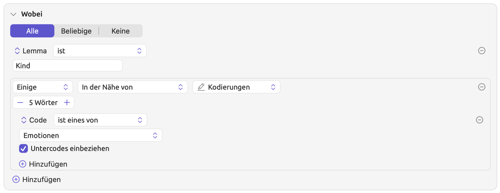
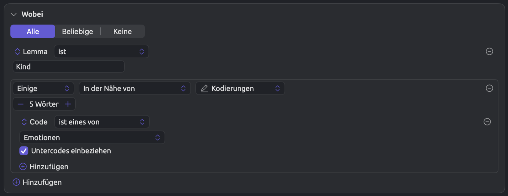
Verknüpft mit betrachtet die Verknüpfungen und nicht die Einheit der Zeile. Wählen Sie Verknüpfungen als Einheit der Zeile, beziehen sich die Regeln unter der Zeile auf die Felder der Verknüpfung, etwa Relation und Kommentar. Einige Verknüpft mit Verknüpfungen ohne Regeln behält jeden Treffer, der ein Ende einer Verknüpfung überlappt.
Übersetzt als betrachtet die Beziehung zwischen einem Dokument und seinen Übersetzungen. Sie besteht erst, wenn Sie das Dokument übersetzt haben (siehe Kapitel 9, Übersetzungen und geteilte Ansicht). Um Übersetzungssprache oder Übersetzungstext zu prüfen, wählen Sie Zuordnungen als Einheit der Zeile. In der Facette Abfrage von „Uns läuft die Zeit davon“ kann zum Beispiel eine Abfrage mit der Einheit Sätze die Kontextzeile Einige Übersetzt als Zuordnungen mit der Regel Übersetzungstext enthält climate haben. Sie findet die deutschen Sätze, deren englische Übersetzung climate enthält.
„Hat“
Eine „Hat“-Zeile zählt Objekte, die zum Treffer gehören, etwa die Kodierungen eines Dokuments oder die Dokumente eines Sets. Sie liest sich wie eine Kontextzeile und hilft Ihnen, den Fortschritt Ihrer Kodierung im Blick zu behalten, etwa um zu sehen, welche Dokumente Sie noch nicht kodiert haben. Die Zeile Hat Keine Kodierungen findet zum Beispiel Dokumente, die noch gar nicht kodiert sind.
„Hat“ hinzufügen erscheint bei den Einheiten in dieser Tabelle:
| Bei Suche nach | „Hat“ kann zählen |
|---|---|
| Dokumente | Kodierungen, Memos, Lesezeichen, Verknüpfungen, Redebeiträge, Befunde, Zuordnungen |
| Codes | Kodierungen, Memos |
| Code-Sets | Codes |
| Sets, Gruppen, Tags, Projekte | Dokumente |
Das Mengenmenü bietet wie in einer Kontextzeile Einige, Keine, Mindestens und Höchstens. Der Wert für Mindestens und Höchstens reicht von 1 bis 999. Regeln unter der Zeile grenzen ein, welche Objekte gezählt werden. Hat Keine Kodierungen mit der Regel Code ist eines von „Kosten“ liefert zum Beispiel Dokumente ohne Kodierung mit „Kosten“, unabhängig davon, ob sie andere Kodierungen haben.
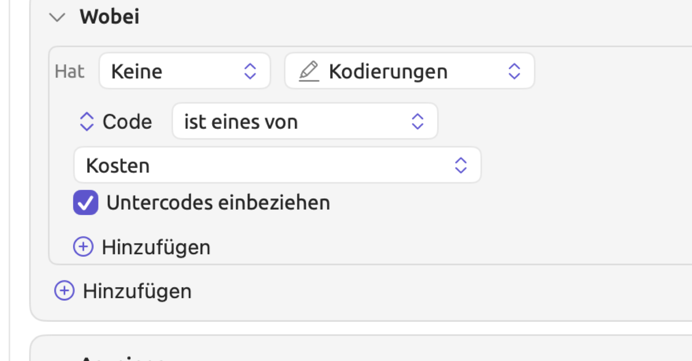
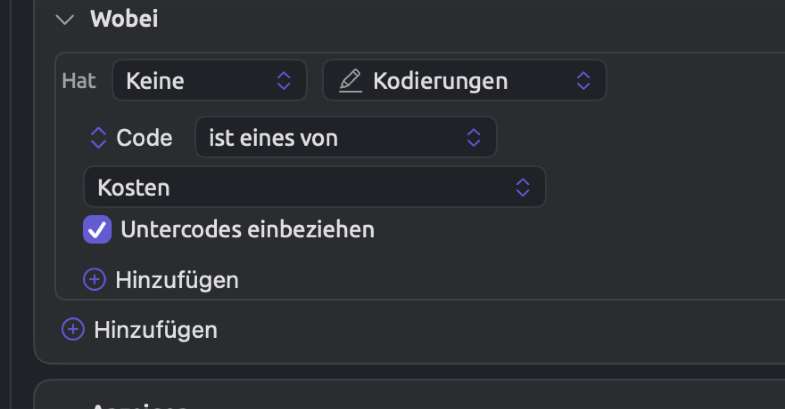
Bei der Suche nach Codes zählen dagegen nur Kodierungen im Geltungsbereich und nur solche mit dem Code selbst. Im Set „Skeptiker“ liefert eine Abfrage nach Codes mit Hat Mindestens 5 Kodierungen die Codes, die in den Dokumenten der Skeptiker mindestens fünfmal vergeben wurden. Ist jede Textstelle, die unter „Dringlichkeit“ fällt, entweder mit „Fristen“ oder mit „Kipppunkte“ kodiert, liefert Hat Keine Kodierungen den Code „Dringlichkeit“. Hat Memos zählt die mit dem Code verknüpften Memos in allen Dokumenten des Projekts, auch in denen außerhalb des Geltungsbereichs.
Kategorien und Färben nach
Kategorien ordnen die Treffer in benannte, farbige Gruppen. Wird die Abfrage als Lens verwendet, annotieren die Kategorien ihre Treffer in unterschiedlichen Farben und Stilen, und die Legende der Lens listet die Kategorien auf. Listen erhalten eine Spalte Kategorie, und mit Gruppieren nach ▸ Kategorie in der Bedingung Anzeigen sehen Sie, wie viele Treffer zu welcher Kategorie gehören.
In der Abfrage „Dringlichkeit im Gespräch“ des Projekts „Klimadebatte“ könnten Sie zum Beispiel eine Kategorie „Krise“ mit einer Textzeile auf Lemma für Krise und Notfall anlegen und eine zweite Kategorie „Frist“ mit einer Textzeile auf Lemma für Frist. Dient die Abfrage als Lens, annotiert sie die beiden Arten von Dringlichkeit in unterschiedlichen Farben.
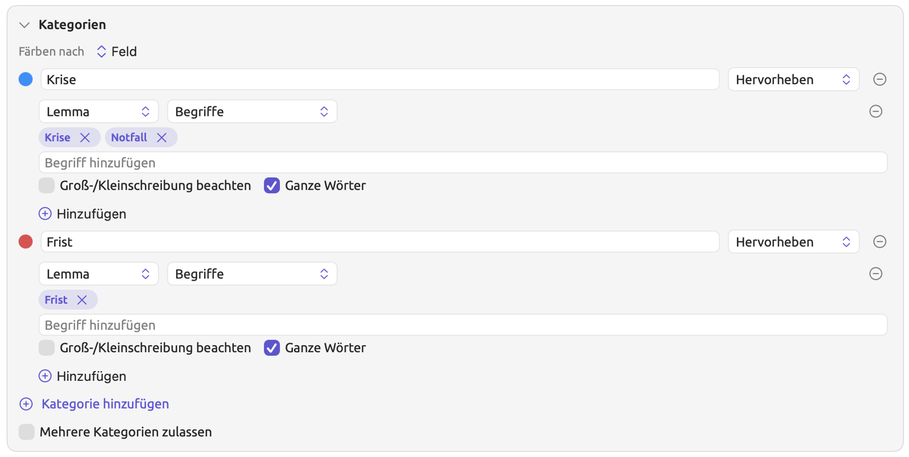
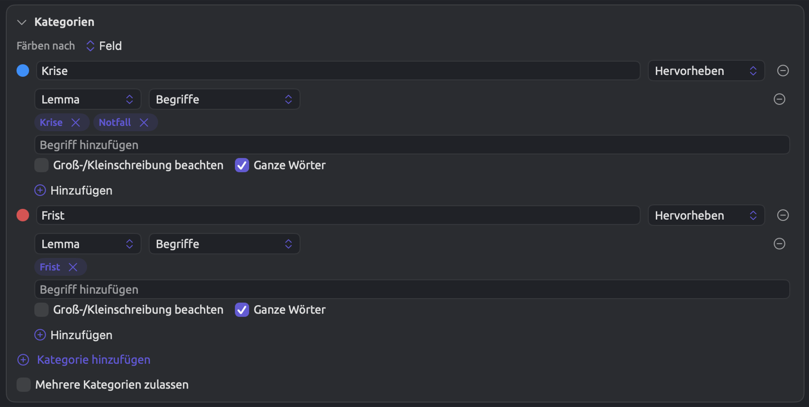
Kategorien bestehen aus Regeln. So fügen Sie eine hinzu:
- Öffnen Sie die Bedingung Kategorien und klicken Sie auf Kategorie hinzufügen. Eine Zeile namens „Kategorie 1“ erscheint.
- Klicken Sie auf den farbigen Punkt und wählen Sie eine Farbe.
- Ersetzen Sie „Kategorie 1“ durch einen eigenen Namen.
- Wählen Sie im Menü neben dem Namen Hervorheben oder Unterstreichen.
- Fügen Sie unter der Zeile Regeln hinzu, wie in der Bedingung Wobei.
Was die Reihenfolge der Kategorien betrifft, erhält jeder Treffer die erste Kategorie von oben, deren Regeln er erfüllt. Mit einem Häkchen bei Mehrere Kategorien zulassen erhält jeder Treffer alle Kategorien, die auf ihn zutreffen. Ein Satz, der sowohl Krise als auch Frist erwähnt, gehört dann zu den Kategorien „Krise“ und „Frist“. Eine Kategorie ohne Regeln erhält keine Treffer. Bei einem Treffer, der die Regeln keiner Kategorie erfüllt, bleibt die Spalte Kategorie leer. Schließlich ignoriert LemmaLoom eine unvollständige Regel; eine Kategorie, deren einzige Regel noch keinen Wert hat, erhält deshalb jeden Treffer, bis die Regel ausgefüllt ist.
Färben nach oben in der Bedingung Kategorien bildet Kategorien aus Feldern statt aus Regeln. Jeder vorkommende Wert des Feldes, das Sie im Menü daneben wählen, wird zu einer eigenen Kategorie mit eigener Farbe. Bei Kodierungen funktioniert Färben nach Code genauso; jeder Code erhält eine eigene Farbe. Um die Redebeiträge im Dokument „Radiodebatte“ nach Kategorien zu sehen, wählen Sie also Färben nach Sprecher:in und unterscheiden so „Moderation“, „Aktivistin“ und „Skeptiker“. Um das Feld unter Färben nach zu entfernen, klicken Sie auf die Minus-Schaltfläche daneben.
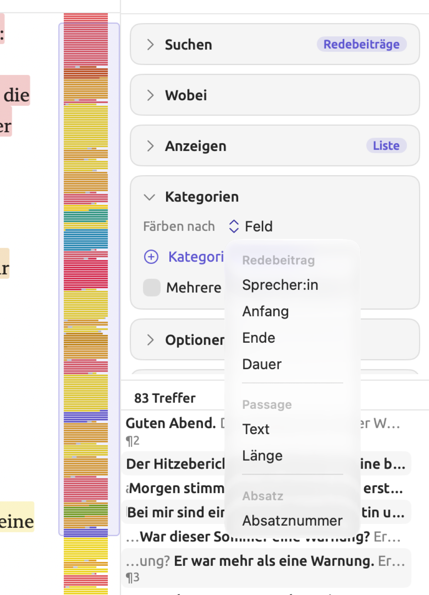
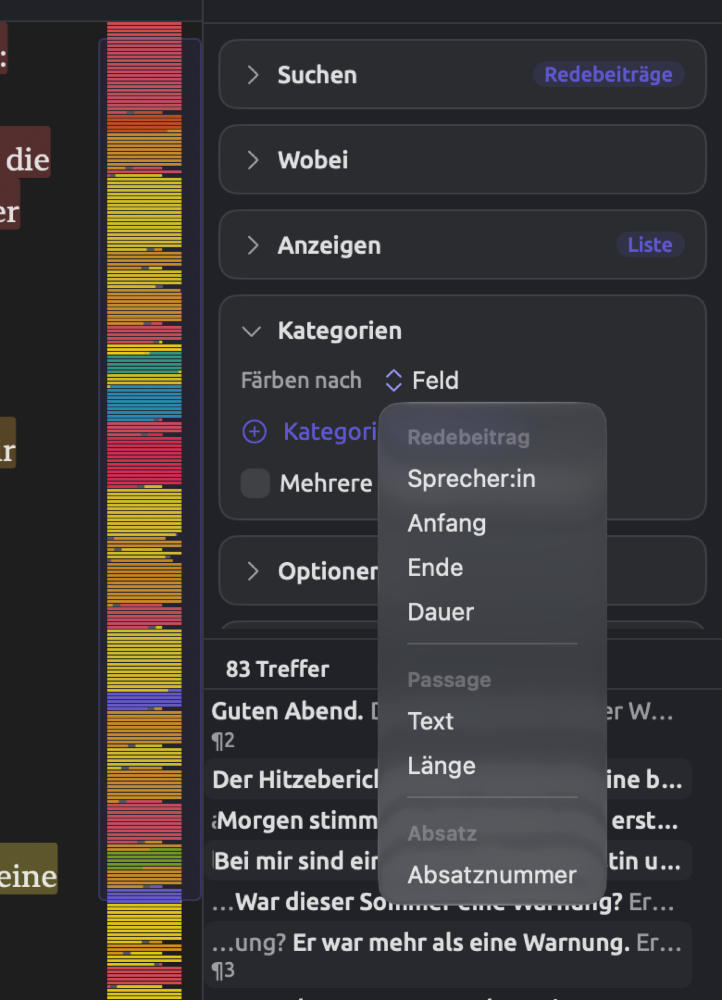
Hat eine Abfrage sowohl Kategorien aus Regeln als auch Färben nach, erhält ein Treffer die erste passende Kategorie aus den Regeln und nur dann eine aus Färben nach, wenn keine Regelkategorie auf ihn passt. Mit einem Häkchen bei Mehrere Kategorien zulassen erhält der Treffer alle passenden Kategorien, einschließlich der aus Färben nach.
Kategorien erhalten automatisch der Reihe nach die Farben Blau, Rot, Grün, Orange, Violett, Rosa, Indigo und Gelb, jeweils mit dem Stil Hervorheben; ab der neunten folgt der Stil Unterstreichen. Eine Abfrage kann höchstens 16 Kategorien haben; ist diese Zahl erreicht, verschwindet die Schaltfläche Kategorie hinzufügen. Eine Lens zeigt höchstens 16 Einträge, deshalb können höchstens 16 Werte eine Farbe aus Färben nach erhalten.
Die Bedingung Anzeigen
Welche Ergebnisarten die Bedingung Anzeigen liefert, hängt von Einheit und Geltungsbereich ab, und jede Ergebnisart hat ihre eigenen Optionen. Meist beginnen Sie mit einer Liste, um zu prüfen, ob die Abfrage das gefunden hat, was Sie gemeint haben, und gehen danach zu Zählungen oder Vergleichen über.
| Anzeigen | Was Sie erhalten | Angeboten für | Steuerelemente |
|---|---|---|---|
| Liste | Eine Zeile pro Treffer | Jede Einheit und jeden Geltungsbereich | das Menü, das Dokumentreihenfolge zeigt, Begrenzen |
| Anzahl | Die Zahl der Treffer, insgesamt oder nach einem oder zwei Schlüsseln unter Gruppieren nach | Jede Einheit und jeden Geltungsbereich | Gruppieren nach, das Menü, das Treffer zeigt, Begrenzen |
| Vergleichen | Zählungen nach Gruppe, mit einem statistischen Test | Sets, Projekte und Alle Projekte | Gruppieren nach, das Menü, das Treffer zeigt, das Menü, das Automatisch zeigt, Begrenzen |
| Im Zeitverlauf | Treffer verteilt über ein Dokument, über die Medienzeit oder über ein Datumsfeld | Textstelleneinheiten und Dokumente | Gruppieren nach, das Menü, das Treffer zeigt |
| Kollokationen | Wörter, die in der Nähe der Treffer vorkommen | Wörter, Mustertreffer, Texttreffer | das Menü, das Lemma zeigt, Fenster, das Menü, das logDice zeigt, Minimum |
| Schlüsselwörter | Wörter, die der Geltungsbereich häufiger oder seltener verwendet als eine Referenz | Wörter, in einem Set oder Projekt | das Menü, das Rest des Projekts zeigt (nach Set ein Menü mit den Sets), das Menü, das Lemma zeigt, das Menü, das LL ≥ 3,84 zeigt |
| Netzwerk | Welche Werte zusammen vorkommen | Textstelleneinheiten | Gruppieren nach, das Menü, das Überlappend mit zeigt |
Listen sind zunächst nach Dokumentreihenfolge sortiert. Weitere Sortierungen sind Übereinstimmung, Linker Kontext, Rechter Kontext, Dokument und Häufigkeit, dazu Wert, wenn die Abfrage eine eingefrorene Liste hat; Bibliothekseinheiten lassen sich nach Name oder Dokumentreihenfolge sortieren. Das Markierungsfeld Begrenzen beschränkt die Ergebnisse auf die ersten 50 Treffer oder auf die Zahl, die Sie mit den Schaltflächen − und + daneben einstellen. Die Bedingung Optionen hat außerdem eine eigene Grenze; es gilt die kleinere der beiden.
Mehr zu jeder Ergebnisart mit ihren Maßen und Tests finden Sie in Kapitel 16, Abfrageergebnisse und Statistik.
Optionen
- Das Menü, das Originale zeigt, legt oben in der Bedingung fest, wie eine Abfrage in einem Set oder Projekt mit den Übersetzungen ihrer Dokumente umgeht. Voreingestellt ist Originale. Originale liest nur die Originaldokumente, Übersetzungen liest nur die Übersetzungen der Dokumente im Geltungsbereich, und Beide liest Originale und Übersetzungen zusammen.
- Kodierte Memos zählen als Kodierungen hat anfangs ein Häkchen. Dann zählt ein Memo, das an eine Textstelle angehängt und mit einem Code verknüpft ist, als Kodierung mit diesem Code, sowohl bei der Suche nach Kodierungen als auch in Kontextzeilen über Kodierungen. Das Feld Kodiertes Memo der Kodierung kennzeichnet diese Fälle. Ohne Häkchen werden nur echte Kodierungen gezählt. Unabhängig von diesem Markierungsfeld zählen „Hat“-Zeilen nur Kodierungen.
- Grenze 5.000 legt fest, wie viele Treffer eine Liste höchstens zeigt. Mit den Schaltflächen − und + daneben ändern Sie den Wert in Schritten von 1.000 bis 200.000. Begrenzen in der Bedingung Anzeigen kann ihn nur verringern. Die Trefferzahl über den Ergebnissen zeigt die Zahl aller gefundenen Treffer. Alle Berechnungen, Zählungen und Vergleiche verwenden in jedem Fall alle Treffer.
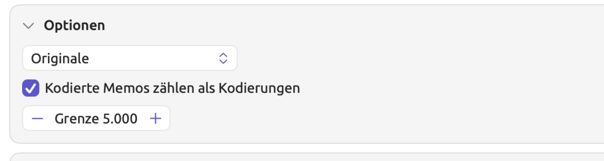
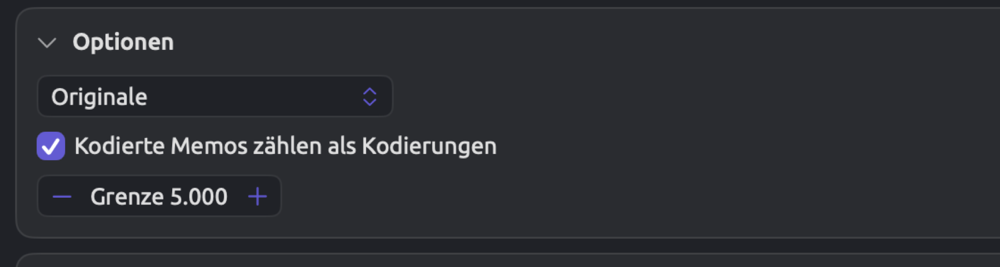
Eine Abfrage ausführen
Abfragen in einem Dokument oder in einem Set oder Projekt mittlerer Größe laufen kurz nach jeder Änderung neu. LemmaLoom wartet, bis Sie beim Bearbeiten eine Pause machen, prüft die Abfrage dann und führt sie neu aus. Während die Abfrage die Dokumente eines Sets oder Projekts liest, füllt sich neben Stoppen ein Fortschrittsring. Die Ergebnisse erscheinen nach und nach, schon bevor das letzte Dokument gelesen ist.
Abfragen in Sets, Projekten und unter Alle Projekte laufen von selbst, wenn ihre Dokumente zusammen weniger als etwa 300.000 Token (Wörter und Satzzeichen) enthalten. Abfragen, die den Text gar nicht brauchen, laufen ebenfalls von selbst, etwa bei Bibliothek · Codes. Bei Abfragen mit Schlüsselwörter zählen auch die Dokumente, mit denen verglichen wird, zu dieser Grenze von 300.000. Liegt eine Abfrage darüber, zeigt der Ergebnisbereich nach jeder Änderung eine Schaltfläche Abfrage ausführen. Klicken Sie darauf, klicken Sie auf das Dreieck in der Kopfzeile der Abfrage oder wählen Sie Bearbeiten ▸ Abfrage ausführen (⌘R). Wie lange eine große Abfrage dauert, hängt von der Größe der Dokumente und von der Hardware Ihres Mac ab.
Eine lange Abfrage brechen Sie mit Stoppen ab; damit endet ihre Berechnung. Bearbeiten ▸ Neue Abfrage leert den Editor und behält die Einheit, sodass Sie die Abfrage mit einer leeren Bedingung Wobei neu aufbauen können.
Kann eine Abfrage nicht laufen, ist das Dreieck deaktiviert, und der Ergebnisbereich zeigt eine der folgenden Meldungen. Die betroffene Regel ist rot umrandet; wenn Sie den Mauszeiger darauf halten, sehen Sie den Grund. Unvollständig erscheint nur an der Regel, denn die Abfrage läuft trotzdem.
| Meldung | Bedeutung | Läuft |
|---|---|---|
| Unvollständig | Eine Regel hat noch keinen Wert, oder eine Textzeile hat keine Begriffe. Die Regel oder Zeile wird ignoriert, bis Sie sie vervollständigen | Ja |
| Fehlt | Ein Code, ein Attribut, ein Wörterbuch, alle ausgewählten Kategorien, eine Gruppe, ein Set, ein Code-Set, ein Projekt oder ein Dokument, auf das sich die Regel bezieht, wurde gelöscht | Nein |
| Hier nicht verfügbar | Das Feld lässt sich in diesem Geltungsbereich nicht verwenden, etwa ein Dokumentfeld in der Facette Abfrage eines Dokuments | Nein |
| Ungültiges Muster | Ein regulärer Ausdruck lässt sich nicht lesen | Nein |
| Muster zu lang | Ein regulärer Ausdruck ist länger als 1.000 Zeichen | Nein |
| Zu tief verschachtelt | Eine Regel liegt mehr als drei Ebenen tief, etwa unter einer Kontextzeile innerhalb einer Gruppe (siehe Gruppen) | Nein |
| Zu viele Knoten | Ein Dependenzmuster hat zu viele Wörter | Nein |
| Erfordert ein Set oder Projekt | Eine gesicherte Abfrage, die Vergleichen oder Schlüsselwörter anzeigt, wurde in der Facette Abfrage eines Dokuments geöffnet | Nein |
| Nichts zum Vergleichen | Schlüsselwörter vergleicht den Geltungsbereich mit sich selbst | Nein |
| Kein Set gewählt | Schlüsselwörter soll mit einem Set vergleichen, aber es ist keines gewählt | Nein |
Die Meldung Hier nicht verfügbar erscheint meist, wenn Sie eine gesicherte Abfrage an einem Ort laden, für den sie nicht gemacht wurde. Eine Abfrage, die das Attribut „Haltung“ verwendet, läuft im Projekt, zeigt in der Facette Abfrage eines Dokuments aber diese Meldung.
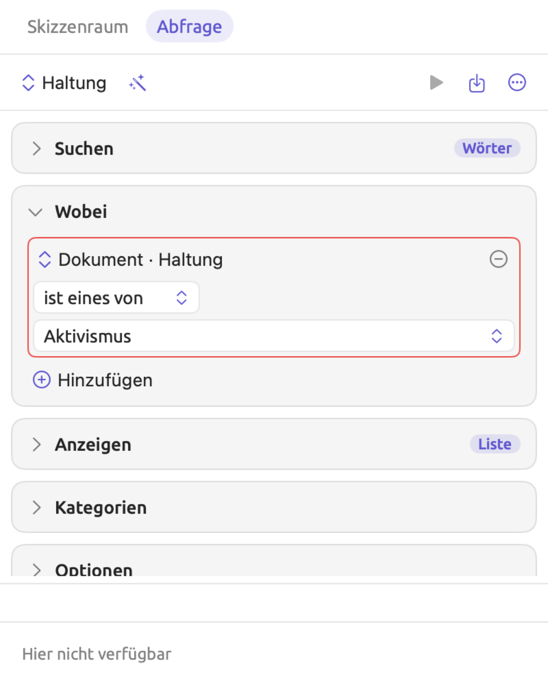
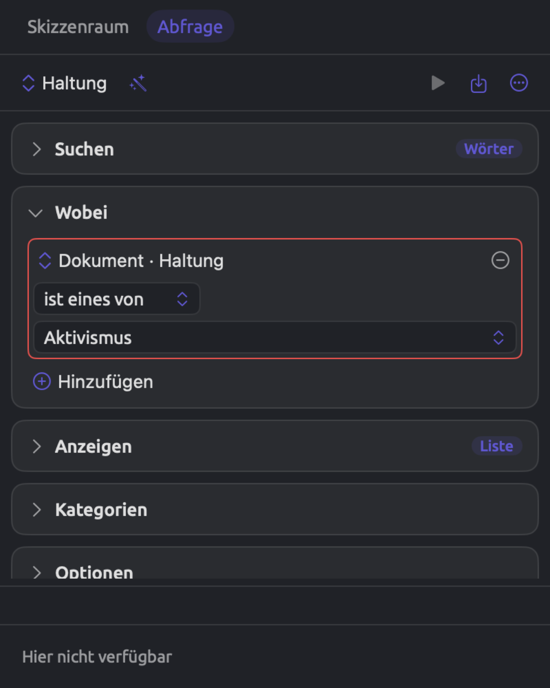
Die Bedingung Abfragetext
Die Bedingung Abfragetext zeigt die ganze Abfrage Zeile für Zeile als ausgeschriebenen Text, wie für „Dringlichkeit im Gespräch“ unter Eine erste Abfrage weiter oben gezeigt.
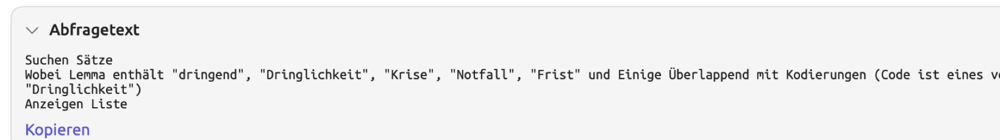
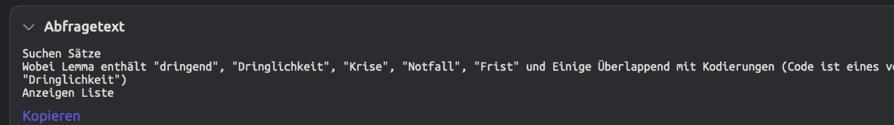
Lesen Sie den Abfragetext, um zu prüfen, ob Ihre Frage richtig gestellt ist, besonders bei Abfragen mit Gruppen. Alle, Beliebige und Keine erscheinen dort als und, oder und nicht, wobei auf nicht eine Klammer folgt. Verwendet Ihre Abfrage Anzahl oder Vergleichen, stehen ihre Schlüssel aus Gruppieren nach und ihr Maß in der letzten Zeile, etwa Anzeigen Anzahl Nach Lemma · Treffer.
Der Abfragetext ist zum Lesen da und zum Einfügen in Ihre Forschungsdokumentation, etwa in Aufsätze und Forschungstagebücher; um die Abfrage zu ändern, ändern Sie die Bedingungen. Klicken Sie auf Kopieren, um den Abfragetext in die Zwischenablage zu legen und in andere Programme einzufügen. Exporte von Ergebnissen enthalten den Abfragetext ebenfalls (siehe Ergebnisse exportieren in Kapitel 16, Abfrageergebnisse und Statistik).
Abfragen sichern
Eine gesicherte Abfrage behält ihren Namen, ihre Bedingungen und ihren Eigentümer, also den Ort, zu dem sie gehört. Er bestimmt, wo sie in der Oberfläche erscheint.
| Verfügbar in | Wo die Abfrage angeboten wird |
|---|---|
| Dokument | In der Facette Abfrage dieses Dokuments |
| Set | In der Ansicht Abfragen des Sets, im Abfragen-Fenster, solange es das Set zeigt, und in der Facette Abfrage jedes Dokuments im Set und seiner Übersetzungen |
| Projekt | In der Ansicht Abfragen des Projekts, in den Ansichten Abfragen seiner Sets, in der Facette Abfrage jedes seiner Dokumente und im Abfragen-Fenster, solange es das Projekt oder eines seiner Sets zeigt |
| Alle Projekte | Überall |
Sichern Sie eine Abfrage dort, wo Sie sie wiederverwenden möchten. Abfragen zu den Texten der Aktivisten gehören zum Set „Aktivisten“, Abfragen für alle Sets und Dokumente einer Studie zum Projekt selbst. Alle Projekte eignet sich, wenn Sie Abfragen in mehreren Studien wiederverwenden möchten (siehe Projektübergreifend arbeiten in Kapitel 3, Projekte und Dokumente). Im Projekt „Klimadebatte“ ist im Set „Aktivisten“ die Abfrage „Schlüsselwörter: Aktivisten“ gesichert, die aus dem Schnellstart stammt.
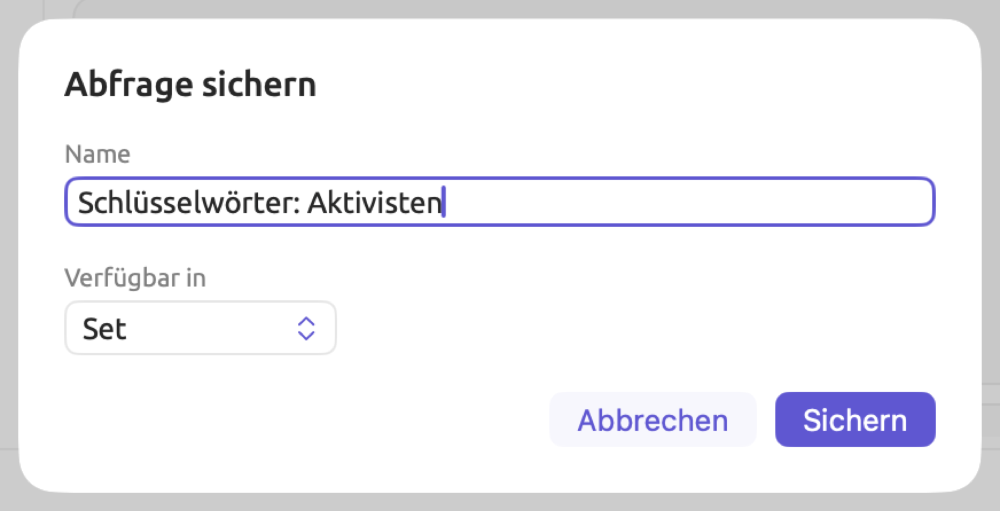
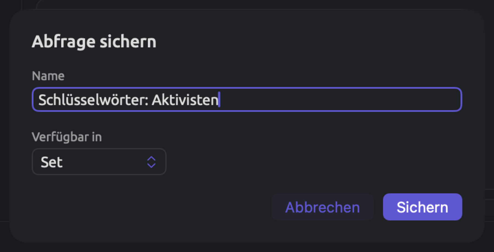
So sichern Sie eine Abfrage zum ersten Mal:
- Öffnen Sie das Menü Sichern und wählen Sie Sichern unter …. Bei einer Abfrage, die noch nie gesichert wurde, bewirkt Sichern dasselbe.
- Geben Sie im Dialog Abfrage sichern unter Name einen Namen ein.
- Wählen Sie unter Verfügbar in, wohin die Abfrage gehört. Das Menü bietet den Ort an, an dem Sie gerade sind, dann Projekt und Alle Projekte, und der erste Eintrag ist vorausgewählt.
- Klicken Sie auf Sichern.
Danach schreibt Sichern Ihre Änderungen in die gesicherte Fassung, und der Punkt nach dem Namen verschwindet. Sichern unter … legt eine Kopie unter einem anderen Namen an. Mit demselben Befehl ordnen Sie eine Abfrage auch einem anderen Ort zu. Bei einer gesicherten Abfrage enthält das Menü außerdem Umbenennen ….
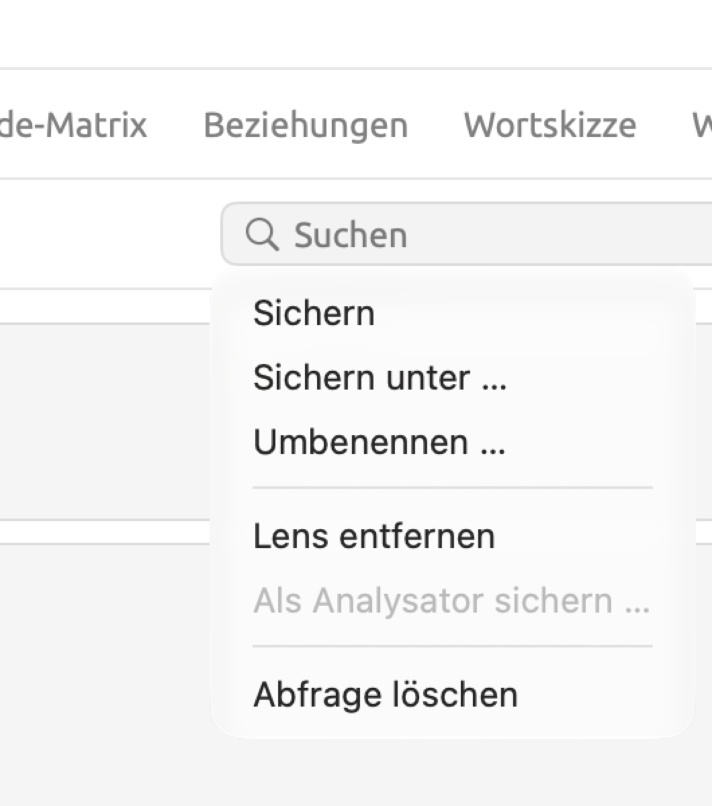
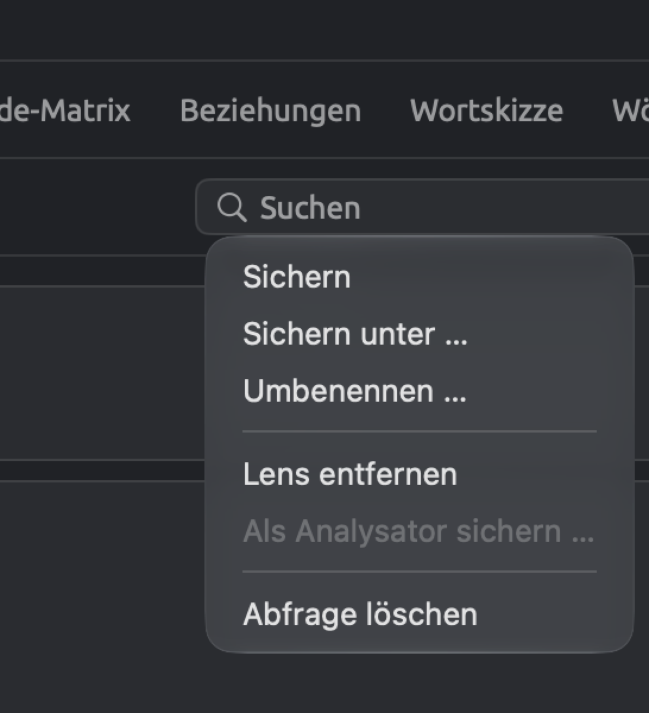
Das Menü Sichern enthält drei weitere Befehle:
- Als Lens sichern … macht die Abfrage zu einer Lens im Lens-Menü der Leseansicht. Muss eine neue Abfrage erst gesichert werden, fragt der Dialog Als Lens sichern nach ihrem Namen und nach Verfügbar in; eine bereits gesicherte Abfrage wird mit Ihren Änderungen gesichert und sofort zur Lens. Ist die Abfrage eine Lens, lautet der Befehl Lens entfernen. Kann eine Abfrage keine Lens werden, ist der Befehl deaktiviert; wenn Sie den Mauszeiger darauf halten, sehen Sie den Grund.
- Als Analysator sichern … macht aus der Abfrage einen eigenen Analysator.
- Abfrage löschen löscht die gesicherte Abfrage und hinterlässt einen leeren Editor.
Mehr dazu, wie sich Lenses und Analysatoren aus Abfragen verhalten, finden Sie in Kapitel 18, Abfrageergebnisse nutzen.
Gesicherte Abfragen öffnen Sie, indem Sie sie im Menü mit dem Namen der Abfrage am linken Ende der Kopfzeile wählen oder in der linken Spalte einer Ansicht Abfragen oder des Abfragen-Fensters anklicken. In der Spalte sind die Abfragen unter Alle Projekte, Projekt, Set und Dokument gruppiert. Neben dem Namen einer Lens steht ein Brillensymbol. Um eine Abfrage in einer langen Liste zu finden, geben Sie einen Teil ihres Namens in das Suchfeld der Kopfzeile ein. Eine geöffnete Abfrage läuft sofort. Um eine Abfrage in dieser Spalte zu löschen, klicken Sie sie mit der rechten Maustaste an und wählen Abfrage löschen.
Schritte wie Sichern, Umbenennen, Löschen und das Umwandeln einer Abfrage in eine Lens oder zurück werden im Verlauf festgehalten. Sie machen sie mit Bearbeiten ▸ Widerrufen (⌘Z) rückgängig; der Menübefehl nennt den Schritt, etwa Abfrage sichern widerrufen. Mehr zum Widerrufen finden Sie in Kapitel 23, Widerrufen und Wiederholen.
Vorlagen
Vorlagen sind vorbereitete Abfragen für grundlegende Forschungsfragen, etwa eine Konkordanz, eine Wortliste oder Kodierungen nach einem Attribut. Wenn Ihnen der Aufbau einer Abfrage von Grund auf schwerfällt, beginnen Sie mit einer Vorlage; dort sehen Sie, wie die Bedingungen ausgefüllt sind, und können sie entsprechend anpassen.
Eine Vorlage erscheint im Editor unter ihrem eigenen Namen, gefolgt von dem Punkt für ungesicherte Änderungen, und läuft sofort in ihrer Grundeinstellung. Danach können Sie sie ändern und sichern wie jede andere Abfrage.
In einer Ansicht Abfragen und im Abfragen-Fenster stehen die Vorlagen in der linken Spalte unter Vorlagen, unterhalb der gesicherten Abfragen. In der Facette Abfrage des Inspektors öffnen Sie das Menü Vorlagen (den Zauberstab) in der Kopfzeile. Die Liste ist in die Abschnitte Wörter, Grammatik, Kodierung, Sprecher:innen und Zeit und Dokumente und Bibliothek gegliedert. Sie zeigt nur Vorlagen, die zum aktuellen Geltungsbereich passen. In Sets und Projekten steht Passagen wie ein Code als letzter Eintrag unter Vorlagen und bietet die Codes zur Auswahl an, die im Geltungsbereich verwendet werden.
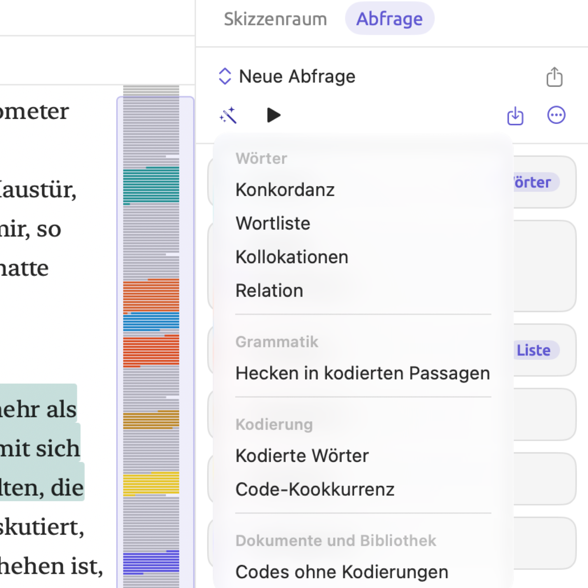
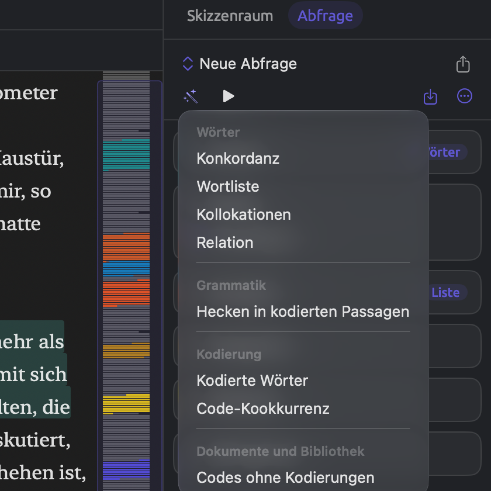
Vorlagen in Kapitel 17, Abfragemuster und Erkundung enthält die vollständige Liste der verfügbaren Vorlagen, mit einer Beschreibung jeder Vorlage, der Abfrage, die sie erzeugt, und dem Geltungsbereich, in dem sie angeboten wird. Passagen wie ein Code im selben Kapitel beschreibt diese Vorlage im Einzelnen.